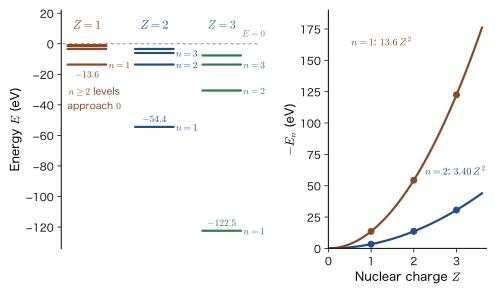
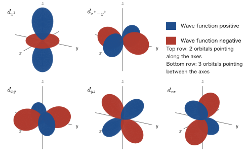

Chapter 43d Electrons in a Crystal Field — Hydrogen-Like 3d Orbitals and the Point-Charge Model
Ruby looks red, and emerald looks green. Both are, at heart, colorless transparent crystals (ruby is aluminum oxide $\mathrm{Al_2O_3}$, and emerald is beryl) with only a tiny amount of chromium ions $\mathrm{Cr^{3+}}$ mixed in. The fact that an aqueous solution of copper sulfate is blue, that an aqueous solution of nickel sulfate is green, and that magnetite $\mathrm{Fe_3O_4}$ is black all hinges on the 3d electrons of transition-metal ions (the blackness also involves electron transfer other than d–d transitions). In papers and textbooks on inorganic materials, symbols and terms such as $t_{2g}$, $e_g$, $\Delta_o$, $10Dq$, high spin and low spin, the crystal field stabilization energy, and Tanabe–Sugano diagrams appear one after another. These are not things to be memorized; they can be derived step by step from quantum mechanics. The aim of this Part VIII (Chapters 43–48) is to enable you to derive, by yourself, all of the theory that lies behind them, and this chapter is its starting point.
The phrase “ligand field theory” sounds like a theory of the chemical bond, but its starting point is surprisingly simple. We treat the 3d electrons of a metal ion as electrons of a hydrogen-like atom with nuclear charge $Ze_0$, and we regard the surrounding ligands, such as oxide ions, as negative point charges. The electrostatic potential created by point charges can be written using only Coulomb's law, which you learned in high-school physics and in AD 03 (Chapter 35, Section 35.1 (in Japanese)). For classical point charges, it says only that “the farther apart they are, the weaker the repulsion.” In quantum mechanics, however, an electron is not at a single point; it is spread out in the form of the orbital $\lvert\psi\rvert^2$. Therefore the energy differs between an orbital pointing toward a ligand and an orbital pointing between ligands. The orientation of an orbital matters. So we first need to know the shapes and sizes of the 3d orbitals accurately.
Accordingly, in this chapter we proceed as follows. (1) We solve the equation of the hydrogen-like atom, keeping the nuclear charge $Z$, by separation of variables and the series method without skipping a single line, and derive the radial function and the levels $E_n=-13.6\ \mathrm{eV}\times Z^2/n^2$. (2) Using that result, we examine the radial function $R_{32}(r)$ of the 3d orbitals and the shapes and sizes of the five real d orbitals. (3) We expand the potential created by the point charges of the ligands in Legendre polynomials and show that only the terms with $k=0,2,4$ shift the levels of a d electron. In the next chapter (Chapter 44), we use this preparation to calculate how the fivefold degenerate d level splits into a twofold degenerate $e_g$ level and a threefold degenerate $t_{2g}$ level.
Road map of this part: Connections to the previous part and the roles of the chapters
Connection with the previous part. In Part VII we studied the wave functions of many-electron systems (atomic units, the Born–Oppenheimer approximation, Hartree products, and Slater determinants: Chapter 33), the electron configurations and terms of many-electron atoms (Chapter 34), the Hartree–Fock approximation (Chapter 35 through Chapter 37), the valence bond method and hybrid orbitals (Chapter 38), molecular orbitals (Chapter 39, Chapter 40), and the bands of crystals (Chapter 41, Chapter 42). The theme throughout was “how an electron behaves in the field created by the atomic nuclei and the other electrons.” Part VIII is one of the applications of that theme: when a transition-metal ion is inside an oxide or a complex, we treat its 3d electrons in the field created by the surrounding atoms. The tools we need are already in hand: the hydrogen atom (Chapter 15 through Chapter 17), shielding (Chapter 18), angular momentum (Chapters 21–25), and degenerate perturbation theory (Chapter 28).
Roles of the chapters. We deepen three models in turn (Figure 43.1).
- Chapter 43 (this chapter): The 3d orbitals of the hydrogen-like atom and the potential created by the point charges of the ligands.
- Chapter 44: In the field of octahedrally arranged point charges, the fivefold degenerate d level splits into a twofold degenerate $e_g$ level and a threefold degenerate $t_{2g}$ level. The formula for $10Dq=\Delta_o$.
- Chapter 45: We use group theory (character tables and irreducible representations) to show that this splitting is not “an accident of the calculation” but follows necessarily from symmetry. The names $t_{2g}$ and $e_g$ (lowercase for one-electron orbitals) and $T_{2g}$ and $E_g$ (uppercase for many-electron terms) are also defined here, together with their origin.
- Chapter 46: How the electrons are accommodated when there are $n$ d electrons. High spin and low spin, the crystal field stabilization energy, and how the cations in spinels choose their sites.
- Chapter 47: Many-electron terms including the electron–electron repulsion. The Racah parameters $B,C$ and Tanabe–Sugano diagrams.
- Chapter 48: d–d transitions and color (ruby and emerald). Finally we move on to the molecular-orbital view (ligand field theory in the original sense).
Where does the theory of $t_{2g}$ and $e_g$ come from? The $t_{2g}$ and $e_g$ often seen in inorganic materials (and $T_{2g}$ and $E_g$ for many-electron states) are names expressing the fact that “the five d orbitals split into two sets with different properties because of the symmetry of the field created by the ligands.” The origin of that theory comes down to just the two ingredients that we build in this chapter: “the hydrogen-like 3d orbitals $\times$ the point-charge potential of the ligands.” In the next chapter, combining them gives the formula for the splitting.
What $t_{2g}$ and $e_g$ are names for — let us get the big picture first
The five d orbitals split into two sets. In a field in which six ligands are arranged around a metal ion at the vertices of a regular octahedron (on the $x,y,z$ axes), that is, an octahedral field, the five d orbitals split into two, $d_{z^2}$ and $d_{x^2-y^2}$, which extend in the direction of the ligands, and three, $d_{xy}$, $d_{yz}$, and $d_{zx}$, which extend between the ligands (Figure 43.6, Section 43.4.3. The proof that they split in this way is in Chapter 44). The former set of two is $e_g$, and the latter set of three is $t_{2g}$.
How to read the names. The letter $e$ denotes “a twofold degenerate set,” and $t$ denotes “a threefold degenerate set” (a nondegenerate set is $a$ or $b$). The subscript $g$ is the initial letter of the German word gerade (even), and indicates that the sign does not change under the inversion through the origin, $\bm{r}\to-\bm{r}$ (every d orbital is invariant under inversion). The subscript $2$ is a number that distinguishes threefold sets with different properties even though both are $t$. The formal definition of these names from symmetry (irreducible representations of a group) is given in Chapter 45; for now it is enough to think of them as “labels that express the degree of degeneracy and the behavior under inversion.”
Lowercase and uppercase. The orbital of a single electron is written in lowercase ($t_{2g}$, $e_g$), and the overall state (term) when there are several electrons is written in uppercase ($T_{2g}$, $E_g$, $A_{2g}$, and so on). For example, in a $d^1$ ion ($\mathrm{Ti^{3+}}$), the state in which the electron is in a $t_{2g}$ orbital is the ground state, with term ${}^2T_{2g}$, and the state in which it is in an $e_g$ orbital is the excited state ${}^2E_g$. As the number of electrons in $d^n$ increases, terms such as $T_{2g}$, $E_g$, and $A_{2g}$ appear for each combination of the ways the electrons can be placed (Chapters 46 and 47).
The energy difference. We write the energy difference between $e_g$ and $t_{2g}$ as $\Delta_o\equiv E(e_g)-E(t_{2g})$, and it is also called $10Dq$ (the subscript $o$ stands for octahedral; the quantity $Dq$ is defined in Chapter 44). When the two ingredients of this chapter, the hydrogen-like 3d orbitals (Eq. \eqref{eq:43-R32}, Figure 43.6) and the point-charge potential (the terms with $k=0,2,4$, Section 43.5), are combined in the next chapter, $e_g$ ends up above and $t_{2g}$ below, and the magnitude of $\Delta_o=10Dq$ comes out. Color (Chapter 48) and high spin versus low spin (Chapter 46) are also determined by this $\Delta_o$.
- The meaning of the names $t_{2g}$ (the threefold degenerate set $d_{xy},d_{yz},d_{zx}$) and $e_g$ (the twofold degenerate set $d_{z^2},d_{x^2-y^2}$), the definition of $\Delta_o=10Dq$, examples of materials in which these are used, the relationship among the three models of the ligand field (point-charge, ligand field, and molecular orbital), and conversion among the wavenumber in $\mathrm{cm^{-1}}$, eV, and nm
- Separating the variables of the Schrödinger equation of a hydrogen-like atom with nuclear charge $Ze_0$ in spherical coordinates, and deriving the radial equation ①, the polar-angle equation ②, and the azimuthal-angle equation ③. The meaning of the separation constants $l(l+1)$ and $m^2$
- Making the substitutions $R=S/r$, $S=Xe^{-\kappa r}$, $x=2\kappa r$, solving the radial equation by a Frobenius series, and deriving the principal quantum number $n=\tau/2\kappa$ and $E_n=-\dfrac{m_{\mathrm e}Z^2e_0^4}{32\pi^2\varepsilon_0^2\hbar^2n^2}$ from the condition that the series terminates. The proportionality of the energy to $Z^2$, and Moseley's law
- The radial function of the 3d orbitals $R_{32}(r)=\dfrac{4}{81\sqrt{30}}\left(\dfrac{Z}{a_0}\right)^{3/2}\rho^2e^{-\rho/3}$ and $\expval{r^k}$, the meaning of the effective nuclear charge $Z_{\mathrm{eff}}$ and the assumed value $Z_{\mathrm{eff}}=7$, and the shapes of the five real d orbitals
- The Legendre expansion of the potential of a point charge, and the reason why only $k=0,2,4$ contribute to the d–d matrix elements (parity and the triangle condition)
Source notes: Yasuhide Mochizuki, “Physics Notes: Quantum Mechanics 3,” pp. 65–66.
43.1 Why Are the Colors and Magnetism of Transition Metals Described by $t_{2g}$ and $e_g$? — Experimental Facts and the Setup at the Starting Point
43.1.1 Experimental facts at the starting point — the colors of transition-metal compounds
Aqueous solutions of the hydrated ions $[\mathrm{M(H_2O)_6}]^{n+}$, in which a metal ion is surrounded by six water molecules, show a variety of colors depending on the metal. For example, $\mathrm{Ti^{3+}}$ looks purple, $\mathrm{Cu^{2+}}$ looks blue, and $\mathrm{Ni^{2+}}$ looks green. On the other hand, $\mathrm{Sc^{3+}}$ and $\mathrm{Ti^{4+}}$ ($3d^0$), whose 3d orbitals are empty, and the filled-shell $\mathrm{Zn^{2+}}$ ($3d^{10}$) are colorless, and the oxides $\mathrm{TiO_2}$ and $\mathrm{ZnO}$ are white (because no transitions between d orbitals occur and the band gap lies in the ultraviolet, so no visible light is absorbed). Color is related to the fact that the 3d orbitals are only partially filled. Moreover, even for the same $\mathrm{Cr^{3+}}$, the color is red in $\mathrm{Al_2O_3}$ (ruby) and green in beryl $\mathrm{Be_3Al_2Si_6O_{18}}$ (emerald). Color is determined not only by the kind of metal ion but also by the arrangement of the atoms around it.
The physics of color is the absorption of light. The energy of one photon is $h\nu=hc/\lambda$, which for visible light (wavelength $400$–$700\ \mathrm{nm}$) is $3.1$–$1.8\ \mathrm{eV}$ (AD 03 and Chapter 4). A substance absorbs light of a particular wavelength because, when an electron jumps from a lower-energy level to a higher one, the spacing between the levels equals the energy of that photon. Therefore, the fact that a transition-metal compound has color means that the spacing between the 3d electron levels is about $1$–$3\ \mathrm{eV}$. In an isolated atom the five 3d orbitals have the same energy (Chapter 16), so this spacing arises from the atom having been placed in a crystal or a complex. In the case of ruby, the absorption bands corresponding to the spacing of the d levels of $\mathrm{Cr^{3+}}$ lie at about $1.8\times10^4\ \mathrm{cm^{-1}}$ (wavelength 555 nm, green, close to yellow-green) and about $2.5\times10^4\ \mathrm{cm^{-1}}$ (near 400 nm, violet); the red and part of the blue between them are transmitted, so the crystal looks deep red (we examine this in detail in Chapter 48).
Example 43.1: Absorption and color of $[\mathrm{Ti(H_2O)_6}]^{3+}$
An aqueous solution of $[\mathrm{Ti(H_2O)_6}]^{3+}$ has an absorption maximum near the wavenumber $\tilde{\nu}=20\,300\ \mathrm{cm^{-1}}$. Find (1) the wavelength of this light in nm and (2) the photon energy in eV, and (3) explain why the aqueous solution looks purple. Use $hc=1239.84\ \mathrm{eV\,nm}$ and $1\ \mathrm{eV}=8065.54\ \mathrm{cm^{-1}}$.
Solution. (1) The wavenumber is the reciprocal of the wavelength, so $\lambda=1/\tilde{\nu}=1/(20\,300\ \mathrm{cm^{-1}})=4.926\times10^{-5}\ \mathrm{cm}$. Since $1\ \mathrm{cm}=10^7\ \mathrm{nm}$, $\lambda=492.6\ \mathrm{nm}$ (blue-green).
(2) The photon energy is $E=hc/\lambda=1239.84\ \mathrm{eV\,nm}/492.6\ \mathrm{nm}=2.517\ \mathrm{eV}$. Converting the wavenumber directly gives the same value, $20\,300/8065.54=2.517\ \mathrm{eV}$.
(3) Blue-green light (around $490\ \mathrm{nm}$) is absorbed, so blue-green is subtracted from white light and the complementary red-purple light is transmitted. The absorption band is broad and has a tail on the yellow side as well, so the solution looks purple, a mixture of red and blue. The origin of the absorption is that the single d electron of $\mathrm{Ti^{3+}}$ ($3d^1$) jumps from the lower set of d orbitals to the higher set (from the next chapter on). The energy of this jump, $2.5\ \mathrm{eV}$, corresponds precisely to the spacing $\Delta_o$ between $t_{2g}$ and $e_g$.
43.1.2 Materials in which $t_{2g}$ and $e_g$ appear
The names $t_{2g}$ and $e_g$ appear frequently in discussions of materials such as the following. Here we only list the names; we explain the reasons one at a time in the respective chapters.
- Perovskite oxides: The bottom of the conduction band of $\mathrm{SrTiO_3}$ ($\mathrm{Ti^{4+}}$, $3d^0$) is made of the $t_{2g}$ orbitals of Ti 3d. The same is true of $\mathrm{RTiO_3}$ ($3d^1$) such as $\mathrm{LaTiO_3}$, and of $\mathrm{LaMnO_3}$ ($\mathrm{Mn^{3+}}$, $t_{2g}^3e_g^1$, Jahn–Teller distortion).
- Spinels: $\mathrm{Fe_3O_4}$ (magnetite) and $\mathrm{LiMn_2O_4}$ (the positive electrode of lithium-ion batteries). Whether a cation goes into a tetrahedral site or an octahedral site is also influenced by how the electrons occupy $t_{2g}$ and $e_g$ (the crystal field stabilization energy) (Chapter 46).
- Layered oxides: $\mathrm{LiCoO_2}$. Low-spin $\mathrm{Co^{3+}}$ ($t_{2g}^6$) forms the framework of the battery positive electrode.
- Rock-salt-type oxides: $\mathrm{NiO}$ ($\mathrm{Ni^{2+}}$, $t_{2g}^6e_g^2$). An antiferromagnetic insulator.
- Cuprate superconductors: $\mathrm{YBa_2Cu_3O_7}$. The $d_{x^2-y^2}$ orbital (an orbital derived from $e_g$) in the $\mathrm{CuO_2}$ planes is responsible for the superconductivity.
By the end of this part, let us aim to be able to explain all of these symbols, and terms such as high spin and low spin, $10Dq$, crystal field stabilization energy, and Tanabe–Sugano diagrams, on our own.
43.1.3 The hierarchy of three models and their history
There are three levels of models for treating the effect of the ligands around a transition-metal ion, from the crude to the precise (Table 43.1; the correspondence between each level and the chapters of this part is shown by the color coding in Figure 43.1). The point-charge model, treated in this chapter and the next, replaces the ligands by negative point charges and treats only the d electrons of the metal ion by quantum mechanics. It is the simplest model, purely electrostatic with no consideration of chemical bonding, and it is historically called crystal field theory. The next level, ligand field theory, does not calculate the size $\Delta$ of the d-level splitting or the strength of the electron–electron repulsion (the Racah parameters $B,C$) from theory, but regards them as parameters determined from experimental values, and uses these parameters to calculate the ordering of the many-electron terms (Chapters 46 and 47). The last level is the molecular orbital method and density functional theory, which include all the electrons of the metal and the ligands and thereby incorporate the covalent bond (Chapter 48; AD 05, “Computational Materials Science”; and AD 07, “Density Functional Theory”). The reason this part is named “Ligand Field Theory” is that we ultimately aim for a viewpoint that connects these three levels, and the point-charge model of this chapter and the next is the first step of it.
| Model | Assumptions | What it can predict | What it cannot predict |
|---|---|---|---|
| Point-charge model (crystal field theory) Chapters 43 and 44 | The ligands are negative point charges. Only the d electrons of the metal ion are treated quantum mechanically | How the fivefold degenerate d levels split (number and order of the levels), $\Delta\propto a^{-5}$, the energetic gain or loss depending on the orbital orientation | The absolute value of $\Delta$ (smaller than the experimental value because covalent bonding is ignored), differences depending on the kind of ligand (the spectrochemical series) |
| Ligand field theory Chapters 46 and 47 (uses the symmetry of Chapter 45 as a tool) | The splitting $\Delta$ and Racah's $B,C$ are taken as parameters determined from experiment | Whether a $d^n$ configuration is high spin or low spin, the ordering of many-electron terms, assignment of absorption spectra | The values of $\Delta,B,C$ themselves |
| Molecular orbital and density functional methods Chapter 48, AD 05, AD 07 | All the electrons of the metal and the ligands are included (covalent bonding) | The magnitude of $\Delta$ and its dependence on the ligand, the spread of the electron cloud, the nature of the bond | The computational cost is large. Treating strongly correlated electrons is difficult |
Let us briefly look back at the history. In 1929 Hans Bethe used group theory to investigate how the energy terms of an ion in a crystal split according to the symmetry of the crystal (the beginning of crystal field theory). In the 1930s J. H. Van Vleck applied this idea to the magnetism of iron-group salts and also clarified its relation to the molecular-orbital viewpoint. In 1954 Yukito Tanabe and Satoru Sugano summarized the splittings of all the terms of the $d^n$ configurations in a single diagram (the Tanabe–Sugano diagram; Chapter 47). In the late 1950s Griffith, Orgel, and others organized the subject as ligand field theory, which takes the effect of covalent bonding into account through parameters.
43.1.4 Common setup, and four consequences of the breaking of the d-level degeneracy
In this part we consider a central metal ion (an ion from $3d^0$ through $3d^{10}$) surrounded by anions or molecules called ligands ($\mathrm{O^{2-}}$, $\mathrm{F^-}$, $\mathrm{H_2O}$, $\mathrm{Cl^-}$, and so on). The most common arrangement (geometry) of the ligands is octahedral coordination, in which six ligands sit at the vertices of a regular octahedron. In addition, there are tetrahedral coordination, in which four ligands sit at the vertices of a regular tetrahedron, and square-planar coordination, in which four ligands are arranged in a square in a single plane (Figure 43.2). The distance between a transition-metal ion and an oxide ion in an oxide (the metal–oxygen distance) is roughly $1.9$–$2.2\ \text{Å}$ (from Shannon's table of ionic radii).
In an isolated atom, there are five 3d orbitals ($2l+1=5$), with magnetic quantum numbers $m=-2,\dots,2$, and they have the same energy (fivefold degeneracy for $l=2$; tenfold when spin is included). This degeneracy is a “non-accidental degeneracy” produced by the spherical symmetry around the atomic nucleus. When ligands are added, the spherical symmetry is broken and the degeneracy is lifted. This simple fact produces the following four consequences (we pick each of them up again in the later chapters).
- Color. Jumps of electrons between the split d levels absorb visible light (Chapter 48).
- Magnetism. The electrons of $d^4$ through $d^7$ choose between pairing up in the lower-energy orbitals and aligning their spins so as to occupy the upper orbitals as well. The former is low spin and the latter is high spin, and the magnitude of the magnetic moment changes (Chapter 46).
- Site preference. In spinels and similar compounds, whether a cation goes into a tetrahedral site or an octahedral site also depends on the difference in the stabilization energy of the d electrons (Chapter 46).
- Lattice distortion. When degenerate orbitals are occupied unevenly, the crystal distorts spontaneously and lifts the degeneracy (the Jahn–Teller effect; Chapter 44).
43.1.5 Constants and conversions used in this book
We rewrite the coefficient $e_0^2/(4\pi\varepsilon_0)$ of the Coulomb energy of point charges in a form that is convenient for calculations with the size of an atom (in Å) and energy (in eV). From here on, the elementary charge is denoted $e_0$ (the electron's charge is $-e_0$, with $e_0=1.602\,176\,634\times10^{-19}\ \mathrm{C}$; this is the same quantity that was written $e$ in AD 03). Moreover, in spectroscopy it is customary to express energy in the unit $\mathrm{cm^{-1}}$ (kayser) of the wavenumber $\tilde{\nu}=1/\lambda$. The wavenumber $\tilde{\nu}=1/\lambda$ is proportional to the energy through $E=hc\tilde{\nu}$, so it is convenient for adding and subtracting level spacings, and it is also the quantity that a spectroscope actually measures (the reciprocal of the wavelength). In addition, its values come out as integers of roughly $10^3$ to $10^4$, which are easy to handle (visible light spans $14\,286$–$25\,000\ \mathrm{cm^{-1}}$), and so this convention became established.
| Quantity | Value |
|---|---|
| Coefficient $e_0^2/(4\pi\varepsilon_0)$ of the Coulomb energy | $14.3996\ \mathrm{eV\,\text{Å}}=1.43996\ \mathrm{eV\,nm}$ ($=E_{\mathrm h}a_0$) |
| $hc$ | $1239.84\ \mathrm{eV\,nm}$ |
| Bohr radius $a_0$, Hartree energy $E_{\mathrm h}$ | $0.529\,177\ \text{Å}$, $27.2114\ \mathrm{eV}$ |
| $1\ \mathrm{eV}$ | $8065.54\ \mathrm{cm^{-1}}=96.485\ \mathrm{kJ/mol}=11\,604.5\ \mathrm{K}$ |
| $1\ \mathrm{cm^{-1}}$ | $1.23984\times10^{-4}\ \mathrm{eV}=0.011963\ \mathrm{kJ/mol}$ |
| Visible light, $700\ \mathrm{nm}$–$400\ \mathrm{nm}$ | $14\,286\ \mathrm{cm^{-1}}$–$25\,000\ \mathrm{cm^{-1}}$ ($1.77\ \mathrm{eV}$–$3.10\ \mathrm{eV}$) |
Example 43.2: Converting among wavenumber, eV, and nm
(1) Convert the size of the splitting, $\Delta=1\ \mathrm{eV}$, to $\mathrm{cm^{-1}}$, to nm, and to $\mathrm{kJ/mol}$. Is this light visible? (2) Express the wavelengths $400\ \mathrm{nm}$ and $700\ \mathrm{nm}$ in $\mathrm{cm^{-1}}$.
Solution. (1) From Table 43.2, $1\ \mathrm{eV}=8065.54\ \mathrm{cm^{-1}}\approx8066\ \mathrm{cm^{-1}}$. The wavelength is $\lambda=hc/E=1239.84\ \mathrm{eV\,nm}/1\ \mathrm{eV}=1239.84\ \mathrm{nm}\approx1240\ \mathrm{nm}$ (near-infrared, outside the visible range). The energy per mole is $96.485\ \mathrm{kJ/mol}$. Therefore a complex with $\Delta=1\ \mathrm{eV}$ (about $8000\ \mathrm{cm^{-1}}$) does not absorb visible light (the absorption is in the near-infrared), and this band alone gives it no color. The $\Delta$ needed for absorption of visible light is about $1.8$–$3.1\ \mathrm{eV}$, which in wavenumbers is about $14\,000$–$25\,000\ \mathrm{cm^{-1}}$.
(2) Since $400\ \mathrm{nm}=4.00\times10^{-5}\ \mathrm{cm}$, we have $\tilde{\nu}=1/(4.00\times10^{-5}\ \mathrm{cm})=25\,000\ \mathrm{cm^{-1}}$. Since $700\ \mathrm{nm}=7.00\times10^{-5}\ \mathrm{cm}$, we have $\tilde{\nu}=14\,286\ \mathrm{cm^{-1}}$. The fact that $\Delta_o$ of the hydrated ions of the 3d transition metals (roughly $1\times10^4$–$3\times10^4\ \mathrm{cm^{-1}}$) falls within this range is the reason they are colored.
43.2 The Schrödinger Equation of a Hydrogen-Like Atom with Nuclear Charge $Ze_0$ — Separation of Variables and $R=S/r$
43.2.1 A hydrogen-like atom with nuclear charge $Ze_0$
Consider a single d electron inside a metal ion. The electron feels the Coulomb attraction exerted by the central atomic nucleus (charge $+Ze_0$). By Coulomb's law (AD 03, Chapter 35, Section 35.1 (in Japanese)), the potential energy between the electron (charge $-e_0$) and the nucleus is
\begin{equation} V(r)=-\frac{1}{4\pi\varepsilon_0}\frac{Ze_0^2}{r} \label{eq:43-V} \end{equation}where $r$ is the distance from the nucleus and $\varepsilon_0$ is the vacuum permittivity. The hydrogen atom (Chapter 15) is the case $Z=1$; $Z=2$ is $\mathrm{He^+}$ and $Z=3$ is $\mathrm{Li^{2+}}$. The form of the central-force potential merely changes in that the attraction becomes $Z$ times as strong, so the method of solving the hydrogen atom can be used as it is. However, we keep $Z$ to the end instead of setting it equal to 1. We do so because then we can see how the result depends on $Z$. In a real metal ion, the inner electrons shield the nuclear charge (Chapter 18), so $Z$ is replaced by the effective nuclear charge $Z_{\mathrm{eff}}$ (Section 43.4). We also treat the nucleus as infinitely heavy and consider only the motion of the electron (for the reduced-mass correction, see Chapter 15, Section 15.1).
Law 43.1: The Schrödinger equation and boundary conditions of a hydrogen-like atom with nuclear charge $Ze_0$
The stationary-state wave function $\psi(r,\theta,\varphi)$ and energy $E$ of an electron (mass $m_{\mathrm e}$) in the potential of Eq. \eqref{eq:43-V} are determined by solving the time-independent Schrödinger equation
\begin{equation} -\frac{\hbar^2}{2m_{\mathrm e}}\nabla^2\psi-\frac{1}{4\pi\varepsilon_0}\cdot\frac{Ze_0^2}{r}\,\psi=E\,\psi \label{eq:43-H} \end{equation}under the conditions that (i) $\psi$ takes a single value at each point of space ($\psi(r,\theta,\varphi+2\pi)=\psi(r,\theta,\varphi)$), (ii) it is finite on the $z$ axis and at the origin, and (iii) it approaches 0 as $r\to\infty$ and is normalizable ($\int\lvert\psi\rvert^2\dd V=1$, a bound state).
The first term on the left-hand side of Eq. \eqref{eq:43-H} is the kinetic energy, and the second term is the potential energy due to the Coulomb attraction. The sign of the second term expresses the fact that $V(r)=-\dfrac{Ze_0^2}{4\pi\varepsilon_0r}$ is negative (attractive).
43.2.2 The Laplacian in spherical coordinates
Since the potential is a function of the distance $r$ from the nucleus only (spherically symmetric), we use spherical coordinates $(r,\theta,\varphi)$ ($\theta$ is the angle from the $z$ axis and $\varphi$ is the azimuthal angle). In spherical coordinates, the Laplace operator (Laplacian) is (AD 02, Chapter 44, Section 44.4)
\begin{equation} \nabla^2=\frac{1}{r^2}\frac{\partial}{\partial r}\left(r^2\frac{\partial}{\partial r}\right)+\frac{1}{r^2\sin\theta}\frac{\partial}{\partial\theta}\left(\sin\theta\frac{\partial}{\partial\theta}\right)+\frac{1}{r^2\sin^2\theta}\frac{\partial^2}{\partial\varphi^2} \label{eq:43-lap} \end{equation}The first term describes how the function spreads in the $r$ direction (the radial direction), and the second and third terms describe how it spreads in the angular directions; the latter two terms carry the common factor $1/r^2$. This structure is what makes the separation of variables possible. The sum of the second and third terms can be written as $-\hat{\bm{L}}^2/(\hbar^2r^2)$ by using the operator $\hat{\bm{L}}^2$ for the square of the magnitude of the orbital angular momentum (Part IV). The reason we later set the separation constant to $l(l+1)$ is that $l(l+1)\hbar^2$ is the eigenvalue of $\hat{\bm{L}}^2$. The radial equation is connected to the angular part only through this eigenvalue of $\hat{\bm{L}}^2$. We do not repeat the derivation, but by carrying out the product rule on the first and second terms, we rewrite them as
$$ \frac{1}{r^2}\frac{\partial}{\partial r}\left(r^2\frac{\partial\psi}{\partial r}\right)=\frac{\partial^2\psi}{\partial r^2}+\frac{2}{r}\frac{\partial\psi}{\partial r},\qquad \frac{1}{\sin\theta}\frac{\partial}{\partial\theta}\left(\sin\theta\frac{\partial\psi}{\partial\theta}\right)=\frac{\partial^2\psi}{\partial\theta^2}+\frac{\cos\theta}{\sin\theta}\frac{\partial\psi}{\partial\theta} $$(the latter follows from $\partial_\theta(\sin\theta\,\psi_\theta)=\cos\theta\,\psi_\theta+\sin\theta\,\psi_{\theta\theta}$).
43.2.3 Separation of variables — three equations for the radial coordinate, the polar angle, and the azimuthal angle
Assuming that the solution can be written as a product of three single-variable functions
$$ \psi(r,\theta,\varphi)=R(r)\,\Theta(\theta)\,\Phi(\varphi) $$we substitute it into Eq. \eqref{eq:43-H} (the method of separation of variables; the $\Phi(\varphi)$ in this chapter is a function of the azimuthal angle and is distinct from the $\Phi$ of the Slater determinant of a many-electron system). We state the result first.
Formula 43.1: Three ordinary differential equations of a hydrogen-like atom with nuclear charge $Ze_0$
Each factor of the solution $\psi=R(r)\Theta(\theta)\Phi(\varphi)$ of Eq. \eqref{eq:43-H} satisfies the following three ordinary differential equations, which contain the separation constants $l(l+1)$ and $m^2$.
\begin{align} &r^2\frac{\dd^2R}{\dd r^2}+2r\frac{\dd R}{\dd r}+\left\{\frac{2m_{\mathrm e}}{\hbar^2}\left(Er^2+\frac{Ze_0^2}{4\pi\varepsilon_0}\,r\right)-l(l+1)\right\}R=0 \tag{①}\label{eq:43-R}\\[1mm] &\sin^2\theta\,\frac{\dd^2\Theta}{\dd\theta^2}+\sin\theta\cos\theta\,\frac{\dd\Theta}{\dd\theta}+\bigl\{l(l+1)\sin^2\theta-m^2\bigr\}\Theta=0 \tag{②}\label{eq:43-Th}\\[1mm] &\frac{\dd^2\Phi}{\dd\varphi^2}+m^2\,\Phi=0 \tag{③}\label{eq:43-Ph} \end{align}Derivation: Separation of variables
(a) Preparing the equation. Multiply both sides of Eq. \eqref{eq:43-H} by $-2m_{\mathrm e}r^2/\hbar^2$. The three terms become, respectively, $-\dfrac{\hbar^2}{2m_{\mathrm e}}\nabla^2\psi\to+r^2\nabla^2\psi$, $-\dfrac{Ze_0^2}{4\pi\varepsilon_0r}\psi\to+\dfrac{2m_{\mathrm e}}{\hbar^2}\dfrac{Ze_0^2}{4\pi\varepsilon_0}\,r\,\psi$ (note that $r^2\times\dfrac1r=r$), and $E\psi\to-\dfrac{2m_{\mathrm e}}{\hbar^2}Er^2\psi$. Moving the last term to the left-hand side (the sign changes from $-$ to $+$) gives $r^2\nabla^2\psi+\dfrac{2m_{\mathrm e}}{\hbar^2}\left(Er^2+\dfrac{Ze_0^2}{4\pi\varepsilon_0}r\right)\psi=0$. Using Eq. \eqref{eq:43-lap} and the rewriting in Section 43.2.2, we find that
$$ r^2\frac{\partial^2\psi}{\partial r^2}+2r\frac{\partial\psi}{\partial r}+\frac{\partial^2\psi}{\partial\theta^2}+\frac{\cos\theta}{\sin\theta}\frac{\partial\psi}{\partial\theta}+\frac{1}{\sin^2\theta}\frac{\partial^2\psi}{\partial\varphi^2}+\frac{2m_{\mathrm e}}{\hbar^2}\left(Er^2+\frac{Ze_0^2}{4\pi\varepsilon_0}r\right)\psi=0 $$holds.
(b) Substituting $\psi=R\Theta\Phi$. Since $R$ is a function of $r$ only, $\Theta$ a function of $\theta$ only, and $\Phi$ a function of $\varphi$ only, each partial derivative acts on just one factor of the product (for example, $\partial^2\psi/\partial r^2=R''\Theta\Phi$ and $\partial^2\psi/\partial\theta^2=R\Theta''\Phi$; the prime $'$ denotes differentiation with respect to the single variable of each function). Dividing the whole equation by $\psi=R\Theta\Phi$, we get
$$ \underbrace{r^2\frac{R''}{R}+2r\frac{R'}{R}+\frac{2m_{\mathrm e}}{\hbar^2}\left(Er^2+\frac{Ze_0^2}{4\pi\varepsilon_0}r\right)}_{r\ \text{dependence only}} +\underbrace{\frac{\Theta''}{\Theta}+\frac{\cos\theta}{\sin\theta}\frac{\Theta'}{\Theta}+\frac{1}{\sin^2\theta}\frac{\Phi''}{\Phi}}_{\theta,\varphi\ \text{dependence only}}=0 $$The sign of the $\Phi''/\Phi$ term is the $+$ that carries over unchanged from the sign of $+\dfrac{1}{\sin^2\theta}\dfrac{\partial^2\psi}{\partial\varphi^2}$ in the equation of (a).
(c) Separating the radial and angular parts. Moving the second group to the right-hand side, we obtain
\begin{equation} r^2\frac{R''}{R}+2r\frac{R'}{R}+\frac{2m_{\mathrm e}}{\hbar^2}\left(Er^2+\frac{Ze_0^2}{4\pi\varepsilon_0}r\right) =-\frac{\Theta''}{\Theta}-\frac{\cos\theta}{\sin\theta}\cdot\frac{\Theta'}{\Theta}-\frac{1}{\sin^2\theta}\cdot\frac{\Phi''}{\Phi}=l(l+1) \label{eq:43-sep1} \end{equation}The left-hand side is a function of $r$ only and the right-hand side is a function of $\theta,\varphi$ only, and yet they are equal for all $(r,\theta,\varphi)$. So if we fix $\theta,\varphi$ and vary only $r$, the right-hand side does not change, and therefore the left-hand side does not change either. Similarly, if we fix $r$ and vary $\theta,\varphi$, the right-hand side does not change either. Hence both sides are constant. We have set this constant (the separation constant) equal to $l(l+1)$ for later convenience. Multiplying the equation “left-hand side $=l(l+1)$” by $R$ and rearranging, we obtain equation ①.
(d) Separating the angular part further. Multiply the equation “right-hand side $=l(l+1)$” of Eq. \eqref{eq:43-sep1} by $\sin^2\theta$ (note that $\sin^2\theta\cdot\dfrac{\cos\theta}{\sin\theta}=\sin\theta\cos\theta$) and move the $\Phi$ term to the other side:
\begin{equation} \sin^2\theta\,\frac{\Theta''}{\Theta}+\sin\theta\cos\theta\,\frac{\Theta'}{\Theta}+l(l+1)\sin^2\theta=-\frac{\Phi''}{\Phi}=m^2 \label{eq:43-sep2} \end{equation}The left-hand side is a function of $\theta$ only and the middle expression is a function of $\varphi$ only, and they are equal for all $\theta,\varphi$, so this too is a constant. We have set that constant equal to $m^2$. Multiplying the equation “left-hand side $=m^2$” by $\Theta$ and rearranging gives equation ②, and multiplying the equation “middle expression $=m^2$” by $-\Phi$ and moving terms to the other side gives equation ③.
∎
Why?: Why do we write the separation constants as $l(l+1)$ and $m^2$?
At this stage the separation constant is a constant of unknown meaning. The argument would proceed in exactly the same way if we called it $c$. The reason we write it as $l(l+1)$ is that later (Chapter 15, Section 15.4) we find that the condition for the polar-angle equation ② to have a solution that is finite on the $z$ axis can be written as “separation constant $=l(l+1)$, with $l$ an integer $0$ or greater”; if we write it this way from the start, the equations can be expressed with integers alone, which makes things easier. Physically, $l(l+1)\hbar^2$ is the eigenvalue of the square of the magnitude of the orbital angular momentum, $\hat{\bm{L}}^2$ (Part IV). Similarly, equation ③ is $\Phi''=-m^2\Phi$, whose solutions are $e^{\pm im\varphi}$. Since $\varphi$ and $\varphi+2\pi$ are the same point in space, we need $\Phi(\varphi+2\pi)=\Phi(\varphi)$. This is satisfied only when $m$ is an integer (Chapter 15, Section 15.3), and $m\hbar$ corresponds to the value of the $z$ component of the angular momentum. Incidentally, the reason the constant is set to $+m^2$ rather than $-m^2$ is that with $-m^2$ we would get $\Phi''=+k^2\Phi$, whose solutions grow or decay exponentially and so cannot return to their original value after one full turn.
Equations ② and ③ appear in the same form as long as the potential is a function of $r$ only. Therefore, the only difference between the hydrogen atom ($Z=1$) and the equations of this section (general $Z$) is the $Ze_0^2$ in the radial equation ①. The solutions of the angular part are $\Phi(\varphi)\propto e^{im\varphi}$ and the associated Legendre function that solves ② (finite on the $z$ axis when $l\ge\lvert m\rvert$; AD 02 Chapter 40, Section 40.4), and combining the two gives the spherical harmonics $Y_l^m(\theta,\varphi)$ (Chapter 22). Since the details of the solution are the same as for the hydrogen atom (Chapter 15, Section 15.3 and Section 15.4), in this chapter we use only the result, at the end of Section 43.3.
Caution: $\hbar$ enters as a square. Let us check the dimensions
In $\dfrac{2m_{\mathrm e}}{\hbar^2}(Er^2+\cdots)$ inside the $\{\ \}$ of equation ①, $\hbar$ enters to the second power. This is only natural, since we multiplied $-\dfrac{\hbar^2}{2m_{\mathrm e}}\nabla^2\psi$ (the kinetic energy) by $-\dfrac{2m_{\mathrm e}}{\hbar^2}$. If $\hbar$ entered to the first power, the dimension of the first term in $\{\ \}$ would become $\mathrm{kg\,m^2\,s^{-1}}$, and we could not add it to the dimensionless $l(l+1)$ (see Example 43.3 below). Checking dimensions is the easiest and most powerful way to catch mistakes made when copying an equation.
Example 43.3: The dimensions of the radial equation ① and its form in atomic units
(1) Verify in SI units that every term inside the $\{\ \}$ of equation ① is dimensionless. Also state what happens if $\hbar$ enters to the first power. (2) Rewrite the equation using $r=a_0\xi$ and $E=E_{\mathrm h}\mathcal{E}$ ($a_0$ is the Bohr radius, and $E_{\mathrm h}=\hbar^2/(m_{\mathrm e}a_0^2)=e_0^2/(4\pi\varepsilon_0a_0)$ is the Hartree energy), so that it contains only $\xi,\mathcal{E},Z$. (3) Verify that for $Z=1$, $\mathcal{E}=-1/2$, and $l=0$, the function $R=e^{-\xi}$ is a solution.
Solution. (1) The units are $[\hbar]=\mathrm{J\,s}=\mathrm{kg\,m^2\,s^{-1}}$, $[E]=\mathrm{J}=\mathrm{kg\,m^2\,s^{-2}}$, and $[m_{\mathrm e}]=\mathrm{kg}$. The quantity $Ze_0^2/(4\pi\varepsilon_0)$ is the product of a Coulomb energy and a length, so its unit is $\mathrm{J\,m}$, and multiplying by $r$ gives $\mathrm{J\,m^2}=[E r^2]$. Hence the first term of $\{\ \}$ is
$$ \frac{2m_{\mathrm e}}{\hbar^2}\,Er^2\ \to\ \frac{\mathrm{kg}\cdot\mathrm{kg\,m^2\,s^{-2}}\cdot\mathrm{m^2}}{\mathrm{kg^2\,m^4\,s^{-2}}}=1 $$and is dimensionless. For the second term (the Coulomb term), $[2m_{\mathrm e}/\hbar^2]\cdot[Ze_0^2/(4\pi\varepsilon_0)]\cdot[r]=\dfrac{\mathrm{kg}\cdot\mathrm{J\,m}\cdot\mathrm{m}}{\mathrm{J^2\,s^2}}=\dfrac{\mathrm{kg\,m^2}}{\mathrm{J\,s^2}}=1$ (using $\mathrm{J}=\mathrm{kg\,m^2\,s^{-2}}$), so it too is dimensionless. Therefore both can be added to $l(l+1)$. If $\hbar$ entered to the first power, the denominator would become $\mathrm{kg\,m^2\,s^{-1}}$, and the dimension of the first term would be $\mathrm{kg\,m^2\,s^{-1}}\ne1$. Then it could not be added to $l(l+1)$, so the factor must be $\hbar^2$.
(2) We have $\dfrac{2m_{\mathrm e}}{\hbar^2}Er^2=2\cdot\dfrac{m_{\mathrm e}a_0^2}{\hbar^2}E_{\mathrm h}\mathcal{E}\xi^2=2\mathcal{E}\xi^2$ (since $m_{\mathrm e}a_0^2/\hbar^2=1/E_{\mathrm h}$). Also $\dfrac{2m_{\mathrm e}}{\hbar^2}\dfrac{Ze_0^2}{4\pi\varepsilon_0}r=2Z\dfrac{m_{\mathrm e}a_0^2}{\hbar^2}\cdot\dfrac{e_0^2}{4\pi\varepsilon_0a_0}\xi=2Z\xi$. The form of $r^2R''+2rR'$ does not change under $r\to a_0\xi$ ($r^2\dd^2/\dd r^2=\xi^2\dd^2/\dd\xi^2$ and $r\,\dd/\dd r=\xi\,\dd/\dd\xi$), so we obtain
$$ \xi^2\frac{\dd^2R}{\dd\xi^2}+2\xi\frac{\dd R}{\dd\xi}+\bigl\{2(\mathcal{E}\xi^2+Z\xi)-l(l+1)\bigr\}R=0 $$This is the equation in atomic units (introduced in Chapter 33, Section 33.1). The $\xi=r/a_0$ in this section is a symbol used only in Section 43.3.6; it is different from the $\rho=Zr/a_0$ used from Section 43.4 on.
(3) If $R=e^{-\xi}$, then $R'=-e^{-\xi}$ and $R''=e^{-\xi}$. Substituting $Z=1$, $\mathcal{E}=-\tfrac12$, and $l=0$ gives $\xi^2e^{-\xi}-2\xi e^{-\xi}+\bigl\{2(-\tfrac12\xi^2+\xi)\bigr\}e^{-\xi}=(\xi^2-2\xi-\xi^2+2\xi)e^{-\xi}=0$, so the equation is satisfied. This is none other than the 1s state of the hydrogen atom ($E=-\tfrac12E_{\mathrm h}=-13.6\ \mathrm{eV}$).
43.2.4 Setting the radial function $R=S/r$ — four terms that cancel
To simplify the first two terms $r^2R''+2rR'$ of the radial equation ①, we set the radial wave function to
$$ R(r)=\frac{S(r)}{r} $$and substitute. First we form $R'$ and $R''$ with the product rule (or the quotient rule).
\begin{equation} \frac{\dd R}{\dd r}=\frac{1}{r}\frac{\dd S}{\dd r}-\frac{S}{r^2},\qquad \frac{\dd^2R}{\dd r^2}=\frac{1}{r}\frac{\dd^2S}{\dd r^2}-\frac{2}{r^2}\frac{\dd S}{\dd r}+\frac{2}{r^3}S \label{eq:43-Rd} \end{equation}For $R''$, the derivative of the first term $S'/r$ of $R'$ is $S''/r-S'/r^2$, and the derivative of the second term $-S/r^2$ is $-S'/r^2+2S/r^3$, so adding them gives $S''/r-2S'/r^2+2S/r^3$. From these we form $r^2R''$ and $2rR'$, line them up vertically, and add.
$$ \begin{array}{rcccc} r^2R'' &=& r\,S'' & -\,2S' & +\,\dfrac{2}{r}S\\[2mm] +\ 2rR' &=& & +\,2S' & -\,\dfrac{2}{r}S\\[1mm] \hline r^2R''+2rR' &=& r\,S'' & +\,0 & +\,0 \end{array} $$That is, $-2S'$ and $+2S'$ cancel, and $+\dfrac{2}{r}S$ and $-\dfrac{2}{r}S$ cancel, so that only $rS''$ remains. In the end,
\begin{equation} r^2R''+2rR'=r\frac{\dd^2S}{\dd r^2} \label{eq:43-cancel} \end{equation}holds. Substituting this into equation ① and writing $\{\ \}R=\{\ \}S/r$, we obtain
\begin{equation} r\frac{\dd^2S}{\dd r^2}+\left\{\frac{2m_{\mathrm e}}{\hbar^2}\left(Er^2+\frac{Ze_0^2}{4\pi\varepsilon_0}\,r\right)-l(l+1)\right\}\frac{S}{r}=0 \label{eq:43-S1} \end{equation}The sign of the Coulomb term inside the braces is $+$, the same as in equation ① (the attractive potential $-Ze_0^2/(4\pi\varepsilon_0r)$ became $+$ when moved to the other side). In the next section we divide this equation by $r$ and proceed.
Example 43.4: Checking the substitution $R=S/r$ with a concrete function
Take $S(r)=r\,e^{-r}$, form $R=S/r$, and verify that Eq. \eqref{eq:43-cancel} holds.
Solution. We have $R=S/r=e^{-r}$, with $R'=-e^{-r}$ and $R''=e^{-r}$, so $r^2R''+2rR'=r^2e^{-r}-2re^{-r}=(r^2-2r)e^{-r}$. On the other hand, $S'=e^{-r}-re^{-r}$ and $S''=-e^{-r}-e^{-r}+re^{-r}=(r-2)e^{-r}$, so $rS''=(r^2-2r)e^{-r}$, which agrees. Also, checking with Eq. \eqref{eq:43-Rd}, we get $R'=S'/r-S/r^2=(1-r)e^{-r}/r-e^{-r}/r=-e^{-r}$, which indeed agrees with $-e^{-r}$. Looking at the breakdown of the four terms at $r=1$: the three terms of $r^2R''$ are $rS''=-e^{-1}$, $-2S'=0$, and $\dfrac{2}{r}S=2e^{-1}$, and the two terms of $2rR'$ are $2S'=0$ and $-\dfrac{2}{r}S=-2e^{-1}$; the $0$ and $\pm2e^{-1}$ cancel, and only $-e^{-1}$ remains.
43.3 Series Solution of the Radial Equation — Introducing the Principal Quantum Number and the $Z^2$ Dependence of the Energy
43.3.1 The bound-state constants $\kappa$ and $\tau$
We divide Eq. \eqref{eq:43-S1} by $r$. Noting that $\dfrac{1}{r}\Bigl(Er^2+\dfrac{Ze_0^2}{4\pi\varepsilon_0}r\Bigr)\dfrac{S}{r}=\Bigl(E+\dfrac{Ze_0^2}{4\pi\varepsilon_0r}\Bigr)S$, we obtain
$$ \frac{\dd^2S}{\dd r^2}+\left\{\frac{2m_{\mathrm e}}{\hbar^2}\left(E+\frac{Ze_0^2}{4\pi\varepsilon_0\,r}\right)-\frac{l(l+1)}{r^2}\right\}S=0 $$Note that $r^2$ does not multiply the first term in the braces. We want to find the states in which the electron is bound to the atomic nucleus, so the total energy is negative, $E\lt0$ (if $E\gt0$, the electron can escape to infinity and is not bound). We therefore define the positive constants $\kappa$ and $\tau$ as follows.
\begin{equation} -\kappa^2=\frac{2m_{\mathrm e}E}{\hbar^2},\qquad \tau=\frac{m_{\mathrm e}Ze_0^2}{2\pi\varepsilon_0\hbar^2}\qquad(\kappa\gt0,\ \tau\gt0) \tag{A}\label{eq:43-A} \end{equation}($\kappa$ is pronounced “kappa” and $\tau$ is pronounced “tau.”) The constant $\kappa$ represents the energy $E$, and $\tau$ represents the strength of the Coulomb attraction. Since $\dfrac{2m_{\mathrm e}}{\hbar^2}\cdot\dfrac{Ze_0^2}{4\pi\varepsilon_0}=\dfrac{m_{\mathrm e}Ze_0^2}{2\pi\varepsilon_0\hbar^2}=\tau$, the radial equation takes the following form.
\begin{equation} \frac{\dd^2S}{\dd r^2}+\left\{-\kappa^2+\frac{\tau}{r}-\frac{l(l+1)}{r^2}\right\}S=0 \label{eq:43-S2} \end{equation}The dimensions of $\kappa,\tau$ are both 1/length (because $\kappa^2$ is added to $1/r^2$). Using the Bohr radius $a_0=\dfrac{4\pi\varepsilon_0\hbar^2}{m_{\mathrm e}e_0^2}$, we have $\tau=\dfrac{2Z}{a_0}$ ($\tau=2Z\cdot\dfrac{m_{\mathrm e}e_0^2}{4\pi\varepsilon_0\hbar^2}=\dfrac{2Z}{a_0}$). In other words, $\tau$ is determined by the charge of the atomic nucleus alone, and $\kappa$ (through $E$) is the unknown that has not yet been determined.
Intuition: Eq. \eqref{eq:43-S2} is a one-dimensional Schrödinger equation on a half-line
Multiplying Eq. \eqref{eq:43-S2} by $-\hbar^2/(2m_{\mathrm e})$ gives $-\dfrac{\hbar^2}{2m_{\mathrm e}}\dfrac{\dd^2S}{\dd r^2}+V_{\mathrm{eff}}(r)S=ES$, with $V_{\mathrm{eff}}(r)=-\dfrac{Ze_0^2}{4\pi\varepsilon_0r}+\dfrac{\hbar^2\,l(l+1)}{2m_{\mathrm e}r^2}$. This is a one-dimensional problem on $r\gt0$ only (the same form as in Chapter 10), in which the first term on the right-hand side is the Coulomb attraction and the second term is the centrifugal potential. It is the quantum version of the fact that, in classical mechanics, the motion in the radial direction of central-force motion with angular momentum $L$ can be written with an effective potential containing $L^2/(2m_{\mathrm e}r^2)$ (AD 03, Chapter 8, Section 8.4), with the replacement $L^2\to l(l+1)\hbar^2$. As $r\to0$, the centrifugal term diverges to $+\infty$ and pushes the electron away from the origin. Since $R$ is finite at the origin, $S(0)=rR|_{r=0}=0$, and the normalization becomes $\displaystyle\int_0^\infty R^2r^2\dd r=\int_0^\infty S^2\dd r$ (Chapter 15, Section 15.5).
First, let us look at the form of the solution in the two limits. As $r\to\infty$, $\tau/r$ and $l(l+1)/r^2$ approach 0 compared with $\kappa^2$, so Eq. \eqref{eq:43-S2} becomes $S''\simeq\kappa^2S$, and the solution is $S\simeq Ae^{-\kappa r}+Be^{+\kappa r}$. For the solution to be normalizable, $e^{+\kappa r}$ is not allowed ($B=0$), so far from the nucleus the solution decays as $S\simeq Ae^{-\kappa r}$. As $r\to0$, $l(l+1)/r^2$ is the strongest term, and $S''\simeq l(l+1)S/r^2$. Letting $S\sim r^s$, we get $s(s-1)=l(l+1)$, that is, $s=l+1$ or $s=-l$, and normalization together with $S(0)=0$ gives $s=l+1$ ($R\sim r^l$). The substitution we look at next serves to extract the forms in these two limits first.
43.3.2 Setting $S=X\,e^{-\kappa r}$
We first factor out the decay $e^{-\kappa r}$ that occurs far from the nucleus, and set
$$ S(r)=X(r)\,e^{-\kappa r} $$Since we have merely defined a new function $X$ by $X=Se^{\kappa r}$, no generality is lost. We apply the product rule.
$$ \frac{\dd S}{\dd r}=\Bigl(\frac{\dd X}{\dd r}-\kappa X\Bigr)e^{-\kappa r},\qquad \frac{\dd^2S}{\dd r^2}=\Bigl(\frac{\dd^2X}{\dd r^2}-\kappa\frac{\dd X}{\dd r}\Bigr)e^{-\kappa r}-\kappa\Bigl(\frac{\dd X}{\dd r}-\kappa X\Bigr)e^{-\kappa r}=\Bigl(\frac{\dd^2X}{\dd r^2}-2\kappa\frac{\dd X}{\dd r}+\kappa^2X\Bigr)e^{-\kappa r} $$Substituting this into Eq. \eqref{eq:43-S2} gives
$$ \Bigl(X''-2\kappa X'+\kappa^2X\Bigr)e^{-\kappa r}+\Bigl\{-\kappa^2X+\frac{\tau}{r}X-\frac{l(l+1)}{r^2}X\Bigr\}e^{-\kappa r}=0 $$Since $+\kappa^2X$ and $-\kappa^2X$ cancel each other, dividing by $e^{-\kappa r}\ne0$ gives
\begin{equation} \frac{\dd^2X}{\dd r^2}-2\kappa\frac{\dd X}{\dd r}+\left\{\frac{\tau}{r}-\frac{l(l+1)}{r^2}\right\}X=0 \label{eq:43-X} \end{equation}This is the equation we obtain.
43.3.3 Setting $x=2\kappa r$ — toward a dimensionless variable
Eq. \eqref{eq:43-X} still contains two constants with dimensions, $\kappa,\tau$, which makes its structure hard to see. We therefore introduce a dimensionless variable that takes the length $1/(2\kappa)$ as its unit,
$$ x=2\kappa r $$Here $r=x/(2\kappa)$, and by the chain rule $\dfrac{\dd}{\dd r}=\dfrac{\dd x}{\dd r}\dfrac{\dd}{\dd x}=2\kappa\dfrac{\dd}{\dd x}$; therefore $\dfrac{\dd X}{\dd r}=2\kappa\dfrac{\dd X}{\dd x}$ and $\dfrac{\dd^2X}{\dd r^2}=4\kappa^2\dfrac{\dd^2X}{\dd x^2}$, and also $\dfrac{1}{r}=\dfrac{2\kappa}{x}$ and $\dfrac{1}{r^2}=\dfrac{4\kappa^2}{x^2}$. Substituting into Eq. \eqref{eq:43-X} gives
$$ 4\kappa^2\frac{\dd^2X}{\dd x^2}-2\kappa\cdot2\kappa\frac{\dd X}{\dd x}+\left\{\tau\cdot\frac{2\kappa}{x}-l(l+1)\frac{4\kappa^2}{x^2}\right\}X=0 $$and dividing both sides by $4\kappa^2$ yields
\begin{equation} \frac{\dd^2X}{\dd x^2}-\frac{\dd X}{\dd x}+\left\{\frac{\tau}{2\kappa}\cdot\frac{1}{x}-\frac{l(l+1)}{x^2}\right\}X=0 \label{eq:43-Xx} \end{equation}Note that $\tau$ and $\kappa$ enter only through the single combination $\tau/2\kappa$, and we give this combination a name.
\begin{equation} n\equiv\frac{\tau}{2\kappa} \tag{B}\label{eq:43-B} \end{equation}At this stage, $n$ is merely the name of the positive real number $\tau/2\kappa$. We will show in Section 43.3.4 that it is an integer. In terms of $n$, Eq. \eqref{eq:43-Xx} becomes
\begin{equation} \frac{\dd^2X}{\dd x^2}-\frac{\dd X}{\dd x}+\left\{\frac{n}{x}-\frac{l(l+1)}{x^2}\right\}X=0 \label{eq:43-Xn} \end{equation}This is a form that contains only the parameters $n,l$. The flow of the transformations so far is summarized in Figure 43.3.
43.3.4 Frobenius series solution — truncation condition and the principal quantum number
Eq. \eqref{eq:43-Xn} has a singularity at $x=0$ (the $1/x$ and $1/x^2$ terms), but because it is a regular singular point, a Frobenius series solution $X=\sum_{j=0}^{\infty}c_jx^{j+\lambda}$ ($c_0\ne0$) exists (AD 02, Chapter 39, Section 39.3, Section 39.4). We substitute this into Eq. \eqref{eq:43-Xn}.
Derivation: Coefficients of the Frobenius series and truncation
Differentiating term by term, substituting, and separating the terms containing $x^{j+\lambda-2}$ (those from $X''$ and $-l(l+1)X/x^2$) from the terms containing $x^{j+\lambda-1}$ (those from $-X'$ and $nX/x$), we obtain
$$ \sum_{j=0}^{\infty}\bigl[(j+\lambda)(j+\lambda-1)-l(l+1)\bigr]c_j\,x^{j+\lambda-2}+\sum_{j=0}^{\infty}\bigl[n-(j+\lambda)\bigr]c_j\,x^{j+\lambda-1}=0 $$Taking out the $j=0$ term of the first sum (the lowest-order term, $x^{\lambda-2}$) and shifting the index of the $j\ge1$ terms by $j\to j+1$ so that they line up with $x^{j+\lambda-1}$, we find that the conditions for the coefficient of each power to vanish (uniqueness of power series) are
\begin{align} \bigl[\lambda(\lambda-1)-l(l+1)\bigr]c_0&=0 \label{eq:43-ind}\\ \bigl[(j+1+\lambda)(j+\lambda)-l(l+1)\bigr]c_{j+1}+\bigl[n-(j+\lambda)\bigr]c_j&=0\qquad(j=0,1,2,\dots) \label{eq:43-rec0} \end{align}Eq. \eqref{eq:43-ind} (the indicial equation) factorizes as $(\lambda-l-1)(\lambda+l)=0$, so $\lambda=l+1$ or $\lambda=-l$. The solution with $\lambda=-l$ diverges at the origin as $R=S/r\sim r^{-l-1}$, so we discard it ($s=l+1$ in Section 43.3.1), and take $\lambda=l+1$. Then the first bracket becomes $(j+l+2)(j+l+1)-l(l+1)=(j+1)(j+2l+2)$ and the second becomes $n-(j+l+1)$, so Eq. \eqref{eq:43-rec0} becomes the recurrence relation
\begin{equation} c_{j+1}=\frac{j+l+1-n}{(j+1)(j+2l+2)}\,c_j\qquad(j=0,1,2,\dots) \label{eq:43-rec} \end{equation}Here $c_0$ is an overall constant multiple, which we fix later by normalization.
Truncation. If $n$ is not an integer greater than or equal to $l+1$, the numerator of Eq. \eqref{eq:43-rec} does not vanish for any $j$, so the series does not terminate. As $j\to\infty$, $c_{j+1}/c_j\to1/j$, which is the same behavior as the ratio of the coefficients of $e^{x}=\sum x^j/j!$. Therefore $X\sim e^{x}$ and $S=Xe^{-\kappa r}\sim e^{+\kappa r}$ ($x/2=\kappa r$), which diverges as $r\to\infty$ and cannot be normalized (a detailed proof by inequalities is given in Chapter 15, Section 15.5.6). This is the $e^{+\kappa r}$ solution that we discarded in Section 43.3.1 reappearing. A normalizable solution exists only when the series terminates after a finite number of terms and becomes a polynomial. The series terminates when $c_{j_{\max}+1}=0$ for some $j_{\max}$, that is, when the numerator vanishes, $j_{\max}+l+1-n=0$; since $j_{\max}\ge0$ and $l\ge0$ are integers, we have
\begin{equation} n=j_{\max}+l+1=l+1,\ l+2,\ l+3,\ \dots\qquad(\text{integer,}\ l\le n-1) \label{eq:43-nint} \end{equation}Thus $X$ is a polynomial from $x^{l+1}$ up to $x^{n}$. The degree $n-l-1$ of the polynomial left after the factor $x^{l+1}$ is removed equals the number of points where the radial wave function vanishes (radial nodes).
∎
Let us write the coefficients down in closed form. Multiplying the recurrence relation Eq. \eqref{eq:43-rec} together successively starting from $c_0$ (with $j$ continuing up to $j_{\max}=n-l-1$) gives $c_j=c_0(-1)^j\dfrac{(n-l-1)!\,(2l+1)!}{(n-l-1-j)!\,(2l+1+j)!\,j!}$. Now we relabel the index as $k=j+2l+1$, absorb the factors of $c_0$, and multiply the whole by $\{(n+l)!\}^2$; this gives the following theorem.
Theorem 43.1: Series solution of the radial equation ($X$ and $R$)
For $n=l+1,\,l+2,\dots$, the solution of Eq. \eqref{eq:43-Xn} that is regular at the origin and normalizable at infinity is given by
\begin{equation} X(x)=N_{nl}\sum_{k=2l+1}^{n+l}\frac{(-1)^k\,\bigl\{(n+l)!\bigr\}^2}{(k-2l-1)!\;k!\;(n+l-k)!}\;x^{\,k-l} \label{eq:43-Xser} \end{equation}where $N_{nl}$ is an overall constant. The radial function is $S(r)=X(2\kappa r)\,e^{-\kappa r}$, $R(r)=\dfrac{S(r)}{r}=\dfrac{X(2\kappa r)\,e^{-\kappa r}}{r}$.
Notation: We write the constant as $N_{nl}$ (to distinguish it from the Bohr radius $a_0$)
The constant multiplying all of Eq. \eqref{eq:43-Xser} is an arbitrary constant expressing the fact that a solution of the differential equation (linear homogeneous) has the freedom of a constant multiple; it is fixed at the end by the normalization condition $\int_0^\infty R^2r^2\dd r=1$. In general it may be written with a symbol such as $a_0$, but in this book that would be confused with the Bohr radius $a_0=4\pi\varepsilon_0\hbar^2/(m_{\mathrm e}e_0^2)$, so we write the normalization constant as $N_{nl}$. Note also that the series sum $\displaystyle\sum_{k}\dfrac{(-1)^k\{(n+l)!\}^2}{(k-2l-1)!\,k!\,(n+l-k)!}\,x^{k-2l-1}$ is the associated Laguerre polynomial (old convention) $L_{n+l}^{2l+1}(x)$, and we can write $X=x^{l+1}L_{n+l}^{2l+1}(x)$ (AD 02, Chapter 41, Section 41.5; Chapter 48, Section 48.3).
Derivation: Eq. \eqref{eq:43-Xser} satisfies the recurrence relation, Eq. \eqref{eq:43-rec}
Let $a_k=\dfrac{(-1)^k\{(n+l)!\}^2}{(k-2l-1)!\,k!\,(n+l-k)!}$ denote the coefficient of $x^{k-l}$ in Eq. \eqref{eq:43-Xser}. The ratio of adjacent coefficients is
$$ \frac{a_{k+1}}{a_k}=-\frac{(k-2l-1)!\,k!\,(n+l-k)!}{(k-2l)!\,(k+1)!\,(n+l-k-1)!}=-\frac{n+l-k}{(k-2l)(k+1)} $$Regard $x^{k-l}=x^{l+1+j}$ and let $j=k-2l-1$ ($k=j+2l+1$). Then $k-2l=j+1$, $k+1=j+2l+2$, and $n+l-k=n-l-1-j$, so $\dfrac{a_{k+1}}{a_k}=\dfrac{j+l+1-n}{(j+1)(j+2l+2)}$. This agrees with $c_{j+1}/c_j$ of the recurrence relation, Eq. \eqref{eq:43-rec}. Moreover, the sum ends at $k=n+l$ ($j=n-l-1$), and the lowest-order term is $x^{l+1}$, at $k=2l+1$ ($j=0$). The sign of the lowest-order coefficient $a_{2l+1}$ is $(-1)^{2l+1}=-1$.
∎
Example 43.5: Building the 3p orbital ($n=3,\ l=1$) from the series
Write out Eq. \eqref{eq:43-Xser} for $n=3$, $l=1$, and find the position of the radial node. Also examine the sign near the origin, and find the normalized function $R_{31}(r)$ whose sign has been adjusted to the standard sign in which $R$ is positive near the origin.
Solution. The sum has two terms, from $k=2l+1=3$ to $n+l=4$. We have $(n+l)!=4!=24$ and $\{(n+l)!\}^2=576$. For $k=3$: $\dfrac{(-1)^3\cdot576}{0!\,3!\,1!}=-96$ ($x^{k-l}=x^2$). For $k=4$: $\dfrac{(+1)\cdot576}{1!\,4!\,0!}=+24$ ($x^3$). Hence
$$ X(x)=N_{31}\bigl(-96x^2+24x^3\bigr)=24N_{31}\,x^2\,(x-4) $$(The recurrence relation, Eq. \eqref{eq:43-rec}, also gives $c_1/c_0=\dfrac{0+1+1-3}{1\cdot4}=-\dfrac14$, which agrees with $X\propto x^2(1-x/4)$.) The node is at $x=4$. Since $\kappa=\dfrac{\tau}{2n}=\dfrac{Z}{3a_0}$ (Section 43.3.5), we have $x=2\kappa r=\dfrac{2Zr}{3a_0}$, so the node is at a single place, $r=\dfrac{6a_0}{Z}$ ($n-l-1=1$). Near the origin ($0\lt x\lt4$) we have $x-4\lt0$, so if $N_{31}\gt0$ then $R\lt0$. To obtain the standard sign, in which the coefficient of $R\sim r^l$ is positive, we multiply the whole by $-1$. Fixing the normalization constant with the general formula of Section 43.3.5 (the $N_{nl}$ just before Eq. \eqref{eq:43-Rstd}), we obtain
$$ R_{31}(r)=\frac{8}{27\sqrt6}\left(\frac{Z}{a_0}\right)^{3/2}\left(1-\frac{Zr}{6a_0}\right)\frac{Zr}{a_0}\,e^{-Zr/3a_0} $$(For $Z=1$, $R_{31}=\dfrac{4\sqrt6}{81}\,\dfrac{r}{a_0}\Bigl(1-\dfrac{r}{6a_0}\Bigr)e^{-r/3a_0}\,a_0^{-3/2}$, with $8/(27\sqrt6)=4\sqrt6/81$.) Near the origin the function is positive and proportional to $r$ ($R\sim r^l=r$); it crosses zero at $r=6a_0/Z$ and becomes negative, and far from the nucleus it decays as $e^{-Zr/3a_0}$. The presence of $n-l-1=1$ radial node is what distinguishes it from 2p and 3d, which have no nodes.
43.3.5 The explicit form of $R(r)$ and the levels $E_n$
From Eq. \eqref{eq:43-B}, $\kappa=\tau/2n$. Squaring this and using $\tau^2=\dfrac{m_{\mathrm e}^2Z^2e_0^4}{4\pi^2\varepsilon_0^2\hbar^4}$, we obtain
\begin{equation} \kappa^2=\frac{\tau^2}{4n^2}=\frac14\cdot\frac{m_{\mathrm e}^2Z^2e_0^4}{4\pi^2\varepsilon_0^2\hbar^4}\cdot\frac{1}{n^2} \label{eq:43-kappa2} \end{equation}On the other hand, from Eq. \eqref{eq:43-A} we had $-\kappa^2=2m_{\mathrm e}E/\hbar^2$. Eliminating $\kappa^2$ from these two equations, we find $E$.
Derivation: Energy levels
Substituting Eq. \eqref{eq:43-kappa2} into $E=-\dfrac{\hbar^2}{2m_{\mathrm e}}\kappa^2$, we obtain
$$ E=-\frac{\hbar^2}{2m_{\mathrm e}}\cdot\frac14\cdot\frac{m_{\mathrm e}^2Z^2e_0^4}{4\pi^2\varepsilon_0^2\hbar^4}\cdot\frac{1}{n^2}=-\frac{m_{\mathrm e}Z^2e_0^4}{32\pi^2\varepsilon_0^2\hbar^2}\cdot\frac{1}{n^2} $$(The denominator is $2\cdot4\cdot4\pi^2=32\pi^2$, $m_{\mathrm e}^2/m_{\mathrm e}=m_{\mathrm e}$, and $\hbar^2/\hbar^4=1/\hbar^2$.) As for the dimensions, $e_0^2/(4\pi\varepsilon_0)$ is $\mathrm{J\,m}$ and $\hbar^2/m_{\mathrm e}$ is $\mathrm{J\,m^2}$, so $E\sim(\mathrm{J\,m})^2/(\mathrm{J\,m^2})=\mathrm{J}$, which is correct.
∎
Theorem 43.2: Energy levels of a hydrogen-like atom
\begin{equation} E_n=-\frac{m_{\mathrm e}Z^2e_0^4}{32\pi^2\varepsilon_0^2\hbar^2}\cdot\frac{1}{n^2}=-\frac{m_{\mathrm e}Z^2e_0^4}{8\varepsilon_0^2h^2}\cdot\frac{1}{n^2}=-13.606\ \mathrm{eV}\times\frac{Z^2}{n^2}\qquad(n=1,2,3,\dots) \label{eq:43-E} \end{equation}Here the second equality uses $32\pi^2\hbar^2=8h^2$ ($\hbar=h/2\pi$), and the third uses $m_{\mathrm e}e_0^4/(32\pi^2\varepsilon_0^2\hbar^2)=13.606\ \mathrm{eV}$. The energy is determined by $n$ alone, independent of $l$ and $m$.
$\kappa$ is also determined: $\kappa=\dfrac{\tau}{2n}=\dfrac{Z}{na_0}$. Therefore $2\kappa r=\dfrac{2Zr}{na_0}$, and the exponential function in $R$ is $e^{-Zr/(na_0)}$. Combining Eq. \eqref{eq:43-Xser} with $R=X(2\kappa r)e^{-\kappa r}/r$, we obtain, in a form containing only fundamental constants,
\begin{equation} R(r)=N_{nl}\,\frac{e^{-\frac{m_{\mathrm e}Ze_0^2}{4\pi\varepsilon_0\hbar^2}\cdot\frac{r}{n}}}{r}\sum_{k=2l+1}^{n+l}\frac{(-1)^k\bigl\{(n+l)!\bigr\}^2}{(k-2l-1)!\,k!\,(n+l-k)!}\left(\frac{m_{\mathrm e}Ze_0^2}{2\pi\varepsilon_0\hbar^2}\cdot\frac{r}{n}\right)^{k-l} \label{eq:43-Rexp} \end{equation}The coefficient in the exponent is $\kappa n=\dfrac{m_{\mathrm e}Ze_0^2}{4\pi\varepsilon_0\hbar^2}=\dfrac{Z}{a_0}$, and the quantity in parentheses is $2\kappa r=\dfrac{2Zr}{na_0}$. Note that $Z$ enters only in the form $Z/a_0$; that is, the larger $Z$ is, the more the electron distribution shrinks toward the nucleus (the unit of length is $a_0/Z$).
Sign convention and the standard form (relation to Chapter 15)
Since the sign of the lowest-order term, $k=2l+1$, in Eq. \eqref{eq:43-Rexp} is $(-1)^{2l+1}=-1$, the function given by that equation is negative near the origin when $N_{nl}\gt0$. This book adopts the standard sign in which the coefficient of $R_{nl}(r)\sim r^l$ is positive (Chapter 15, Section 15.7). Normalizing with $\int_0^\infty R^2r^2\dd r=1$ gives the result of making the replacement $1/a_0\to Z/a_0$ in the formula of Chapter 15, and Eq. \eqref{eq:43-Rexp} is normalized when its constant is taken to be
$$ N_{nl}=\sqrt{\frac{Z}{a_0}\cdot\frac{(n-l-1)!}{n^2\{(n+l)!\}^3}} $$This $R$ is $-1$ times the standard form $R_{nl}$. Using the modern associated Laguerre polynomial $L_{n-l-1}^{(2l+1)}$ (the same convention as scipy.special.genlaguerre; the relation is $L_{n+l}^{2l+1}=-(n+l)!\,L_{n-l-1}^{(2l+1)}$, Chapter 15, Section 15.7.2), the standard form can be written as
The $R_{31}$ of Example 43.5 agrees with what is obtained by putting $\xi=2Zr/(3a_0)$ and $L_1^{(3)}(\xi)=4-\xi$ into Eq. \eqref{eq:43-Rstd} (the $\xi$ here is a symbol used only in this equation and is different from $\rho=Zr/a_0$ used in Section 43.4 and later).
The angular part. The solutions of equations ② and ③ ($\Theta(\theta)$ and $\Phi(\varphi)$) are the same as those of the Schrödinger equation of hydrogen, so we omit them (Section 43.2.3). Using only the results, the total wave function is
\begin{equation} \psi_{nlm}(r,\theta,\varphi)=R_{nl}(r)\,Y_l^m(\theta,\varphi)\qquad(n\ge1,\ 0\le l\le n-1,\ -l\le m\le l) \label{eq:43-psi} \end{equation}($Y_l^m$ is a spherical harmonic with the Condon–Shortley phase; Chapter 22). The fact that the energy is determined by $n$ alone, independent of both $l$ and $m$, contains two degeneracies of different kinds. The ($2l+1$)-fold degeneracy in $m$ is due to the potential being spherically symmetric (this is the degeneracy that the ligand field breaks). The degeneracy in $l$ is an “accidental degeneracy” peculiar to the Coulomb potential having the form $-1/r$, and it is lifted when shielding by the core electrons makes the potential deviate from $-1/r$ (Chapter 18). Since the energy is determined by $n$ alone, each $n$ has $\sum_{l=0}^{n-1}(2l+1)=n^2$ degenerate states (not counting spin). The 3d level has $n=3$, $l=2$, and consists of five states, $m=-2,\dots,2$.
43.3.6 The energy is proportional to $Z^2$
From Eq. \eqref{eq:43-E}, the absolute value of the electron's energy grows in proportion to the square of the nuclear charge $Z$ (the levels for $Z=1,2,3$ are shown in Figure 43.4). The origin of this $Z^2$ can be seen from the atomic-units equation of Example 43.3. Putting $\xi=\xi'/Z$, we get $2(\mathcal{E}\xi^2+Z\xi)=2(\mathcal{E}\xi'^2/Z^2+\xi')$, and the equation has the same form as that of the $Z=1$ hydrogen atom with $\mathcal{E}\to\mathcal{E}/Z^2$. That is, the solution for nuclear charge $Z$ is the hydrogen-atom solution with lengths shrunk by a factor of $1/Z$ ($r\to Zr$) and the energy multiplied by $Z^2$: $R_{nl}^{(Z)}(r)=Z^{3/2}R_{nl}^{(1)}(Zr)$, $E_n^{(Z)}=Z^2E_n^{(1)}$. Intuitively, the attraction becomes $Z$ times stronger and the electron comes $Z$ times closer to the nucleus, so the potential energy ($\propto Z/r$) becomes $Z^2$ times larger (by the virial theorem the kinetic energy increases by the same factor, and the total energy $E=\tfrac12\expval{V}$ also becomes $Z^2$ times; Chapter 17, Section 17.4).

Example 43.6: Levels of hydrogen-like ions and the $Z^2$ rule
(1) Find the ionization energies of the ground states of $\mathrm{He^+}$ ($Z=2$) and $\mathrm{Li^{2+}}$ ($Z=3$) (the energy required to remove the electron from the ground state) from Eq. \eqref{eq:43-E}. (2) For the hydrogen-like ion $\mathrm{Ti^{21+}}$, which retains only the nucleus of Ti with atomic number $Z=22$, find the binding energy of the 1s electron and the rough measure of the extent of the 1s orbital, $a_0/Z$. (3) With which level of the hydrogen atom does the $Z=2$, $n=2$ level have the same energy?
Solution. (1) $E_1=-13.606\ \mathrm{eV}\times Z^2$. For $Z=2$: $13.606\times4=54.42\ \mathrm{eV}$. For $Z=3$: $13.606\times9=122.45\ \mathrm{eV}$. The ionization energy is the absolute value of this. The measured values for $\mathrm{He^+}$ and $\mathrm{Li^{2+}}$ also agree well with these, at about $54.4\ \mathrm{eV}$ and $122.5\ \mathrm{eV}$, respectively.
(2) $13.606\times22^2=13.606\times484=6585\ \mathrm{eV}\approx6.6\ \mathrm{keV}$. With $a_0/Z=0.529\ \text{Å}/22=0.024\ \text{Å}$, we see that the 1s electron of a Ti atom lies extremely close to the nucleus. The energy is of the order of keV, three orders of magnitude larger than the $\mathrm{eV}$ of visible light, and falls in the X-ray region (Moseley's law in the next subsection).
(3) $E=-13.606\times Z^2/n^2=-13.606\times4/4=-13.606\ \mathrm{eV}$, which is the same as that of the 1s level ($Z=1$, $n=1$) of the hydrogen atom ($E$ is determined by $Z/n$ alone; see $n=1$ for $Z=1$ and $n=2$ for $Z=2$ in the left panel of Figure 43.4).
43.3.7 Moseley's law — an application of the $Z^2$ rule to X-rays
The $Z^2$ dependence of Eq. \eqref{eq:43-E} can also be used for the inner electrons (core electrons) of heavy atoms. When one of the K-shell ($n=1$) electrons of an atom of atomic number $Z$ is knocked out by X-rays or an electron beam and an L-shell ($n=2$) electron falls into the vacancy, the X-ray emitted is called the $\mathrm{K}_\alpha$ line. If we approximate that the other 1s electron remaining in the K shell shields only one unit of the nuclear charge (Chapter 18), the effective nuclear charge felt by the falling electron is $Z-1$. In Eq. \eqref{eq:43-E}, taking the difference for $Z\to Z-1$, $n=2\to1$, we obtain
\begin{equation} E(\mathrm{K}_\alpha)\simeq13.606\ \mathrm{eV}\times(Z-1)^2\left(1-\frac14\right)=\frac34\,(13.606\ \mathrm{eV})\,(Z-1)^2=10.204\ \mathrm{eV}\times(Z-1)^2 \label{eq:43-moseley} \end{equation}This explains the experimental discovery by Moseley in 1913 (Moseley's law) that the square root $\sqrt{\nu}$ of the frequency of the $\mathrm{K}_\alpha$ line is proportional to $Z-1$. The history of this law, and the conclusion that the periodic table is arranged by atomic number rather than by atomic weight, were treated in detail in Chapter 15, Section 15.6.5 (and in Chapter 5, Section 5.5). Here, as one example of a use of Eq. \eqref{eq:43-E} with the nuclear charge left as $Z$, we merely check the numbers.
Example 43.7: The $\mathrm{K}_\alpha$ lines of transition metals
Using Eq. \eqref{eq:43-moseley}, estimate the energies of the $\mathrm{K}_\alpha$ lines of Ti ($Z=22$), Fe ($Z=26$), and Cu ($Z=29$), and compare them with the measured values (Ti $4.51\ \mathrm{keV}$, Fe $6.40\ \mathrm{keV}$, Cu $8.05\ \mathrm{keV}$).
Solution. From $10.204\ \mathrm{eV}\times(Z-1)^2$: Ti: $10.204\times441=4.50\ \mathrm{keV}$; Fe: $10.204\times625=6.38\ \mathrm{keV}$; Cu: $10.204\times784=8.00\ \mathrm{keV}$. The ratios to the measured values are $0.998$, $0.996$, and $0.994$, so even the crude approximation that takes into account only “shielding by the one other electron in the K shell” agrees to within 1%.
Application: Characteristic X-rays are the fingerprints of the elements
The energies of characteristic X-rays are determined almost entirely by the atomic number, so EDX in electron microscopes and X-ray fluorescence analysis identify elements by measuring them. The X-ray source for X-ray diffraction (the $\mathrm{K}_\alpha$ line of a Cu X-ray tube, with a wavelength of about $1.54\ \text{Å}$) is discussed in Chapter 15, Section 15.6.5.
43.4 The 3d Orbitals of Transition-Metal Ions — Size and Shape
43.4.1 The 3d radial function $R_{32}(r)$ — the series reduces to a single term
Let us apply Theorem 43.1 to $n=3$, $l=2$. The sum runs from $k=2l+1=5$ to $n+l=5$, so it consists of the single term $k=5$. The coefficient is
$$ \frac{(-1)^5\,(5!)^2}{(5-5)!\;5!\;(5-5)!}=-\,5!=-120,\qquad x^{k-l}=x^3 $$Therefore $X(x)=-120N_{32}\,x^3$. Since $\kappa=\dfrac{Z}{3a_0}$ (Section 43.3.5), we have $x=2\kappa r=\dfrac{2Zr}{3a_0}$, and so, up to a constant, $R=X(2\kappa r)\,e^{-\kappa r}/r$ is given by
$$ R_{32}(r)\ \propto\ \frac{x^3}{r}\,e^{-Zr/3a_0}\ \propto\ r^2\,e^{-Zr/(3a_0)} $$The power is 2, and there is no radial node ($n-l-1=0$). Writing $\rho=Zr/a_0$, we now determine the normalization constant.
Derivation: Normalization of $R_{32}$
Letting $R_{32}=C\rho^2e^{-\rho/3}$, we have $r=(a_0/Z)\rho$ and $r^2\dd r=(a_0/Z)^3\rho^2\dd\rho$, so
$$ \int_0^\infty R_{32}^2\,r^2\dd r=C^2\Bigl(\frac{a_0}{Z}\Bigr)^3\int_0^\infty\rho^{6}e^{-2\rho/3}\dd\rho=C^2\Bigl(\frac{a_0}{Z}\Bigr)^3\cdot\frac{6!}{(2/3)^7} $$Here we used $\int_0^\infty\rho^se^{-a\rho}\dd\rho=s!/a^{s+1}$. Since $6!/(2/3)^7=720\times\dfrac{3^7}{2^7}=720\times\dfrac{2187}{128}=\dfrac{98\,415}{8}$, the normalization condition (the integral $=1$) gives $C^2=\dfrac{8}{98\,415}\Bigl(\dfrac{Z}{a_0}\Bigr)^3$. Because $98\,415=3^9\cdot5$ and $\dfrac{8}{98\,415}=\dfrac{16}{6561\cdot30}=\Bigl(\dfrac{4}{81\sqrt{30}}\Bigr)^2$, we obtain
\begin{equation} R_{32}(r)=\frac{4}{81\sqrt{30}}\left(\frac{Z}{a_0}\right)^{3/2}\rho^2\,e^{-\rho/3},\qquad\rho=\frac{Zr}{a_0} \label{eq:43-R32} \end{equation}As $r\to0$, $R_{32}\sim r^2\gt0$ (the standard sign).
∎
The radial probability density (the probability density of finding the electron in a spherical shell of radius $r$) $r^2R_{32}^2\propto\rho^6e^{-2\rho/3}$ satisfies $\dfrac{\dd}{\dd\rho}(\rho^6e^{-2\rho/3})=0$ at its maximum, which gives $\dfrac{6}{\rho}=\dfrac23$, that is, $\rho=9$; the density is therefore maximal at $r=9a_0/Z$. This coincides with the radius $n^2a_0/Z=9a_0/Z$ of the $n=3$ circular orbit of the Bohr model (a state with $l=n-1$ corresponds to a circular orbit). Using the same integral formula, the expectation value of a power of the distance is found to be
\begin{equation} \expval{r^k}=\int_0^\infty R_{32}^2\,r^{2+k}\dd r=\left(\frac{a_0}{Z}\right)^k\frac{(6+k)!}{6!}\left(\frac32\right)^k \label{eq:43-rk} \end{equation}For $k=1,2,3,4$, $\dfrac{(6+k)!}{6!}$ is $7,\ 56,\ 504,\ 5040$ and $(3/2)^k$ is $1.5,\ 2.25,\ 3.375,\ 5.0625$, so $\expval{r}=\dfrac{21}{2}\dfrac{a_0}{Z}$, $\expval{r^2}=126\Bigl(\dfrac{a_0}{Z}\Bigr)^2$, $\expval{r^3}=1701\Bigl(\dfrac{a_0}{Z}\Bigr)^3$, and $\expval{r^4}=25\,515\Bigl(\dfrac{a_0}{Z}\Bigr)^4$. The quantity $\expval{r^4}$ is the one that determines 10Dq in the next chapter.
![Graphs of the 3d radial function R32(r) and the radial probability density r2R32(r)2. The horizontal axis is the distance r from the nucleus, measured in angstroms. The left panel shows R32(r) and the right panel shows r2R32(r)2. The curve for effective nuclear charge 7 has a sharp peak near 0.7 angstrom, and the curve for effective nuclear charge 4 has a low peak near 1.2 angstroms. The vertical dashed line at 2.0 angstroms is the distance between the metal ion and the ligand. The curve for effective nuclear charge 7 is almost 0 at this position, but the curve for effective nuclear charge 4 still has a value of about 40% of its maximum there, and its tail extends beyond the ligand position.](figs/ch43_fig43-5.svg)
Example 43.8: Checking the normalization of $R_{32}$ and $\expval{r^k}$
(1) Verify, by evaluating the integral numerically, that Eq. \eqref{eq:43-R32} satisfies $\int_0^\infty R_{32}^2r^2\dd r=1$. (2) Use Eq. \eqref{eq:43-rk} to derive the value $126\,(a_0/Z)^2$ of $\expval{r^2}$. (3) Expectation values always satisfy $\expval{r^2}\ge\expval{r}^2$. Check this for $Z=1$, and find the spread $\Delta r=\sqrt{\expval{r^2}-\expval{r}^2}$.
Solution. (1) With $Z=a_0=1$, $R_{32}^2r^2=\dfrac{16}{6561\cdot30}\,r^6e^{-2r/3}$. Multiplying by $\int_0^\infty r^6e^{-2r/3}\dd r=6!\,(3/2)^7=12\,301.875$ gives $\dfrac{16}{196\,830}\times12\,301.875=1.0000$, so it is normalized.
(2) In Eq. \eqref{eq:43-rk} with $k=2$: $\dfrac{8!}{6!}=8\cdot7=56$ and $\Bigl(\dfrac32\Bigr)^2=2.25$. Then $56\times2.25=126$.
(3) For $Z=1$: $\expval{r}=10.5\,a_0$, $\expval{r}^2=110.25\,a_0^2$, and $\expval{r^2}=126\,a_0^2$. Indeed $126\ge110.25$, and $\Delta r=\sqrt{126-110.25}\,a_0=\sqrt{15.75}\,a_0=3.97\,a_0$. The spread is about 38% of $\expval{r}=10.5a_0$.
43.4.2 The 3d orbitals of real ions — the effective nuclear charge $Z_{\mathrm{eff}}$
The 3d electrons of an actual transition-metal ion do not feel the full nuclear charge $Ze_0$ ($22e_0$ for Ti). Because the 18 electrons in the inner 1s, 2s, 2p, 3s, and 3p shells shield the nuclear charge (Chapter 18), we must replace $Z$ with the effective nuclear charge $Z_{\mathrm{eff}}$. Eqs. \eqref{eq:43-R32} and \eqref{eq:43-rk} with $Z_{\mathrm{eff}}$ put in place of $Z$ give the 3d orbitals used in this chapter and the next.
The problem is how to determine the value of $Z_{\mathrm{eff}}$. In Slater's rules (Chapter 18, Section 18.4), each of the 18 inner electrons shields a 3d electron by $1.00$, so for $\mathrm{Ti^{3+}}$ ($[\mathrm{Ar}]3d^1$) we get $Z^*=22-18=4$. However, Slater's rules are known to give 3d orbitals of transition-metal ions that are too spread out compared with reality. Since $\expval{r^4}\propto Z_{\mathrm{eff}}^{-4}$, the choice of $Z_{\mathrm{eff}}$ changes the predicted value of $\Delta_o$ by a factor of nearly 10. In the numerical examples of the next chapter, therefore, this book uses $Z_{\mathrm{eff}}=7$ as an assumed value, which gives the 3d orbital a size of $\expval{r^2}\approx2.6\,a_0^2$ (from Eq. \eqref{eq:43-rk}, $\expval{r^2}=126/49=2.57\,a_0^2$). This is neither a measured value nor a calculated value for any particular ion; it is an assumption made in order to see the order of magnitude of $\Delta_o$. For the size of the 3d orbitals from actual Hartree–Fock calculations, one uses literature values for each ion (for example, the tables of radial integrals of Hartree–Fock 3d orbitals by Freeman, Watson, and coworkers). Note, however, that the Hartree–Fock 3d orbitals are more contracted than the $Z_{\mathrm{eff}}=7$ orbital ($\expval{r^2}$ is roughly $1$–$1.5\,a_0^2$), so using their $\expval{r^4}$ makes the $\Delta_o$ of the point-charge model smaller than the experimental value by a factor of several (Chapter 44, Section 44.4).
| $k$ | $\expval{r^k}\Big/(a_0/Z)^k$ | $Z_{\mathrm{eff}}=7$ | $Z^*=4$ |
|---|---|---|---|
| 1 | $21/2=10.5$ | $1.50\,a_0=0.794\ \text{Å}$ | $2.63\,a_0=1.39\ \text{Å}$ |
| 2 | $126$ | $2.57\,a_0^2=0.720\ \text{Å}^2$ | $7.88\,a_0^2=2.21\ \text{Å}^2$ |
| 4 | $25\,515$ | $10.63\,a_0^4=0.833\ \text{Å}^4$ | $99.7\,a_0^4=7.82\ \text{Å}^4$ |
Example 43.9: How far do 3d electrons extend out to the ligand position?
Let the metal–oxygen distance be $2.0\ \text{Å}$. (1) Find the probability that a 3d electron with $Z_{\mathrm{eff}}=7$ is found outside the ligand ($r\gt2.0\ \text{Å}$). (2) What is it for $Z_{\mathrm{eff}}=4$? (3) Find the ratio of $\expval{r^4}$, $\expval{r^4}_{Z=4}/\expval{r^4}_{Z=7}$, and state what can be learned from $\Delta_o\propto\expval{r^4}$.
Solution. (1) $a_0=0.5292\ \text{Å}$. The distance $r=2.0\ \text{Å}$ corresponds to $\rho=Z_{\mathrm{eff}}r/a_0=7\times2.0/0.5292=26.46$. The probability is $P=\dfrac{\int_{\rho_0}^\infty\rho^6e^{-2\rho/3}\dd\rho}{\int_0^\infty\rho^6e^{-2\rho/3}\dd\rho}$ ($\rho_0=26.46$), and letting $s=\tfrac23\rho_0=17.64$ we get $P=e^{-s}\sum_{j=0}^{6}s^j/j!$ (the incomplete gamma function). From $e^{-17.64}=2.19\times10^{-8}$ and $\sum_{j=0}^{6}17.64^j/j!\approx6.12\times10^{4}$ we obtain $P=1.34\times10^{-3}$, that is, about $0.13\ \%$.
(2) $Z_{\mathrm{eff}}=4$: $\rho_0=4\times2.0/0.5292=15.12$ and $s=10.08$. From $e^{-10.08}=4.20\times10^{-5}$ and $\sum_{j=0}^{6}10.08^j/j!\approx2.98\times10^{3}$ we obtain $P=0.125$, that is, about $13\ \%$, so the orbital with Slater's $Z^*=4$ protrudes substantially beyond the ligand position.
(3) From $\expval{r^4}\propto Z_{\mathrm{eff}}^{-4}$, the ratio is $(7/4)^4=9.38$. Since $\expval{r^4}$ differs by a factor of more than 9 between $Z_{\mathrm{eff}}=4$ and $7$, the predicted value of $\Delta_o\propto\expval{r^4}$ also differs by a factor of more than 9. The predicted value of about $1.2\ \mathrm{eV}$ for $Z_{\mathrm{eff}}=7$ (next chapter) appears to agree with experiment in order of magnitude, but only because $Z_{\mathrm{eff}}$ was assumed (see the Caution in the next chapter); with $Z^*=4$ it becomes about $12\ \mathrm{eV}$ ($1.25\times9.38$), off by an order of magnitude. Because the numerical values of the point-charge model are thus sensitive to how the size of the 3d orbital is put in, we use them in numerical examples with the explicit caveat that they are “assumed.”
Furthermore, going from 3d to 4d and 5d, that is, to periods of larger atomic number, the orbitals become larger (a tendency of $\expval{r}\propto n^2$). It is known experimentally that for transition metals in the same group, $\Delta$ is larger for 4d and 5d than for 3d. The point-charge model cannot fully explain this tendency, because two effects cancel each other: the orbital becomes larger and $\expval{r^4}$ increases, while the metal–ligand distance $a$ also becomes longer and $a^{-5}$ decreases. In reality, what matters is that the 4d and 5d orbitals overlap more easily with the ligand orbitals, which strengthens the covalent bond (Chapter 48). A 3d electron with $Z_{\mathrm{eff}}=7$ lies well inside the ligands, which are several Å away (Figure 43.5), and this serves as the basis for treating the ligand field as a small perturbation. However, the orbital with $Z_{\mathrm{eff}}=4$ extends out to the ligand position (Example 43.9), so this basis becomes weaker.
43.4.3 The five real d orbitals
The 3d states are the five states with $n=3$, $l=2$ ($m=-2,\dots,2$), and they have the same energy (fivefold degenerate). The wave function is $R_{32}(r)\,Y_2^m(\theta,\varphi)$, and the angular part $Y_2^m$ is, including the Condon–Shortley phase (Chapter 16, Section 16.4),
\begin{equation} \begin{aligned} Y_2^{0}&=\sqrt{\frac{5}{16\pi}}\,(3\cos^2\theta-1),\\ Y_2^{\pm1}&=\mp\sqrt{\frac{15}{8\pi}}\,\sin\theta\cos\theta\,e^{\pm i\varphi},\qquad Y_2^{\pm2}=\sqrt{\frac{15}{32\pi}}\,\sin^2\theta\,e^{\pm2i\varphi} \end{aligned} \label{eq:43-Y2} \end{equation}However, $Y_2^m$ is a complex-valued function that singles out the $z$ axis. This is inconvenient for considering the arrangement of the ligands (such as an octahedron, in which the $x,y,z$ axes are equivalent), so, using the fact that a linear combination of degenerate states is also an eigenfunction with the same energy, we construct the real d orbitals. We write the components of the unit vector in the radial direction, $\bm{n}=\bm{r}/r$, as $n_x=\sin\theta\cos\varphi$, $n_y=\sin\theta\sin\varphi$, and $n_z=\cos\theta$ (these are symbols representing a direction, unrelated to the principal quantum number $n$).
Definition 43.1: Real d orbitals
The following five functions are called the real d orbitals (each is $R_{32}(r)$ multiplied by an angular part normalized on the sphere).
$$ \begin{aligned} d_{z^2}&=R_{32}(r)\sqrt{\tfrac{5}{16\pi}}\,(3n_z^2-1)=R_{32}\,Y_2^0,\\ d_{x^2-y^2}&=R_{32}(r)\sqrt{\tfrac{15}{16\pi}}\,(n_x^2-n_y^2)=R_{32}\,\frac{Y_2^2+Y_2^{-2}}{\sqrt2},\\ d_{xy}&=R_{32}(r)\sqrt{\tfrac{15}{4\pi}}\,n_xn_y=R_{32}\,\frac{Y_2^2-Y_2^{-2}}{\sqrt2\,i},\\ d_{yz}&=R_{32}(r)\sqrt{\tfrac{15}{4\pi}}\,n_yn_z=R_{32}\,\frac{i\,(Y_2^1+Y_2^{-1})}{\sqrt2},\\ d_{zx}&=R_{32}(r)\sqrt{\tfrac{15}{4\pi}}\,n_zn_x=-R_{32}\,\frac{Y_2^1-Y_2^{-1}}{\sqrt2} \end{aligned} $$The equalities at the right end of each line are verified by substituting the explicit forms of $Y_2^m$. For example, for $d_{x^2-y^2}$, from Eq. \eqref{eq:43-Y2} and $Y_2^{\pm2}=\tfrac14\sqrt{\tfrac{15}{2\pi}}\sin^2\theta\,e^{\pm2i\varphi}$ we have $\dfrac{Y_2^2+Y_2^{-2}}{\sqrt2}=\dfrac14\sqrt{\dfrac{15}{2\pi}}\sin^2\theta\cdot\dfrac{2\cos2\varphi}{\sqrt2}=\sqrt{\dfrac{15}{16\pi}}\sin^2\theta\cos2\varphi$, and $\sin^2\theta\cos2\varphi=\sin^2\theta(\cos^2\varphi-\sin^2\varphi)=n_x^2-n_y^2$. For $d_{xy}$, $\dfrac{Y_2^2-Y_2^{-2}}{\sqrt2\,i}=\sqrt{\dfrac{15}{16\pi}}\sin^2\theta\sin2\varphi$, and since $\sin^2\theta\sin2\varphi=2n_xn_y$ this gives $\sqrt{\dfrac{15}{4\pi}}n_xn_y$ (the remaining two follow similarly). The five are mutually orthogonal, and each is normalized.

Let us look at the characteristic shapes (Figure 43.6). $d_{x^2-y^2}$ has the shape of four lobes, positive along the $x$ axis and negative along the $y$ axis, and $d_{z^2}$ consists of two lobes along the $z$ axis and a doughnut-shaped ring in its equatorial plane; both extend along the coordinate axes. On the other hand, $d_{xy}$, $d_{yz}$, and $d_{zx}$ extend between the coordinate axes: for example, $d_{xy}$ has four lobes between the $x$ axis and the $y$ axis (in the $45^\circ$ directions). If the ligands lie on the coordinate axes, the former two orbitals point toward the ligands and the latter three point between the ligands. If the ligands are negative point charges, the electron is at an energetic disadvantage when it comes close to a ligand (Coulomb repulsion), so we can predict that the energies of these two groups separate. These are the $e_g$ (two orbitals) and $t_{2g}$ (three orbitals) of the next chapter.
Example 43.10: $d_{xy}$ and $d_{x^2-y^2}$ have the same shape, merely rotated by $45^\circ$
(1) Show that the angular part of $d_{xy}$, $\sqrt{\tfrac{15}{16\pi}}\sin^2\theta\sin2\varphi$, is the angular part of $d_{x^2-y^2}$, $\sqrt{\tfrac{15}{16\pi}}\sin^2\theta\cos2\varphi$, rotated by $45^\circ$ about the $z$ axis. (2) Find the maximum value of each. (3) From this, explain why the energies of $d_{xy}$ and $d_{x^2-y^2}$ are in general different in an octahedral field.
Solution. (1) Since $\sin2\varphi=\cos\!\bigl(2\varphi-\tfrac\pi2\bigr)=\cos2\bigl(\varphi-\tfrac\pi4\bigr)$, we have $d_{xy}(\theta,\varphi)=d_{x^2-y^2}\bigl(\theta,\varphi-\tfrac\pi4\bigr)$. That is, the distribution of $d_{xy}$ is the distribution of $d_{x^2-y^2}$ rotated by $+45^\circ$ about the $z$ axis.
(2) From $\sin^2\theta\le1$ and $\lvert\cos2\varphi\rvert\le1$, the maximum value is $\sqrt{15/(16\pi)}=0.546$; for $d_{x^2-y^2}$ it occurs at $\theta=\pi/2$, $\varphi=0$ (the direction of the $x$ axis), and for $d_{xy}$ at $\theta=\pi/2$, $\varphi=\pi/4$ (between the $x$ axis and the $y$ axis).
(3) The two orbitals have the same radial function and the same angular shape; only their orientations differ, by $45^\circ$. In an isolated atom (spherical symmetry), changing the orientation changes nothing, so the energies are the same (degeneracy). But the ligands of an octahedron lie only on the coordinate axes, so when the orientation of an orbital changes, its closeness to the ligands changes, and so does the electrostatic energy. $d_{x^2-y^2}$ lies in the direction of the ligands, whereas $d_{xy}$ lies between the ligands. Therefore, even for the same shape, the difference in orientation produces a difference in energy inside the crystal.
Finally, note that the real d orbitals are not eigenfunctions of $\hat{L}_z$ (they are superpositions of $\pm m$). In a crystal the orientation of the orbital angular momentum is “quenched,” and the real orbitals become the natural basis (Chapter 22, Section 22.3). Also, when spin is included, a 3d electron has $5\times2=10$ states, and the ligand field lifts the degeneracy of their orbital part. In this chapter and the next, we treat the case of one 3d electron ($d^1$); the many-electron case is treated in Chapter 46 and Chapter 47.
43.5 The Electrostatic Potential Created by the Ligands — Point Charges and the Multipole Expansion
43.5.1 Setup of the point-charge model
We regard ligand $i$ as a point charge $-qe_0$ located at position $\bm{R}_i$ ($q\gt0$; $q=2$ for an oxide ion $\mathrm{O^{2-}}$, $q=1$ for a fluoride ion $\mathrm{F^-}$). When an electron (charge $-e_0$) is at position $\bm{r}$, the potential energy of the Coulomb repulsion between the electron and ligand $i$ is $(-e_0)(-qe_0)/(4\pi\varepsilon_0\lvert\bm{r}-\bm{R}_i\rvert)=+qe_0^2/(4\pi\varepsilon_0\lvert\bm{r}-\bm{R}_i\rvert)$ (a positive value; repulsion). The potential created by several point charges is simply a sum (superposition; AD 03, Chapter 36, Section 36.8 (in Japanese)), so the field of the ligands felt by the electron is given by
\begin{equation} V(\bm{r})=\sum_i\frac{qe_0^2}{4\pi\varepsilon_0}\cdot\frac{1}{\lvert\bm{r}-\bm{R}_i\rvert}=\Lambda\sum_i\frac{1}{\lvert\bm{r}-\bm{R}_i\rvert},\qquad\Lambda\equiv\frac{qe_0^2}{4\pi\varepsilon_0} \label{eq:43-Vlig} \end{equation}Here $\Lambda$ has the dimension of “energy $\times$ length,” and from $e_0^2/(4\pi\varepsilon_0)=14.3996\ \mathrm{eV\,\text{Å}}$ we have $\Lambda=q\times14.3996\ \mathrm{eV\,\text{Å}}$. The Hamiltonian of the 3d electron is $\hat{H}=\hat{H}_0+V$, obtained by adding this $V$ to the Hamiltonian of the hydrogen-like atom in the preceding sections, $\hat{H}_0=-\dfrac{\hbar^2}{2m_{\mathrm e}}\nabla^2-\dfrac{Z_{\mathrm{eff}}e_0^2}{4\pi\varepsilon_0r}$. $V$ is an operator that merely multiplies by a function of the coordinates.
Caution: The ligand charge $q$ is a quantity distinct from the nuclear charge $Z$
In the first half of this chapter, $Z$ (or $Z_{\mathrm{eff}}$) expresses the strength of the attraction that the nucleus of the central ion exerts on the electron (after shielding). The charge of a ligand, on the other hand, is written $-qe_0$, where $q$ is the magnitude of the ligand's charge (the charge number). If $Z$ and $q$ are confused, one would, for example, mistake a hydrogen-like ion with $Z=2$ for an oxide ion with $q=2$. We distinguish the two by writing the position of a point charge as $\bm{R}_i$ and the position of the electron as $\bm{r}$.
Let us outline the calculation ahead. The 3d orbitals are fivefold degenerate under $\hat{H}_0$. Regarding $V$ as small compared with $\hat{H}_0$, we use degenerate perturbation theory (Chapter 28) to build the matrix $\mel{3d,m'}{V}{3d,m}$ in the space of the five 3d orbitals and diagonalize it. Therefore, we first need to expand $V$, as a function of the electron's coordinate $\bm{r}$, into a form that is easy to handle.
43.5.2 Legendre expansion of $1/\lvert\bm{r}-\bm{R}\rvert$
Suppose that a ligand is at distance $R=\lvert\bm{R}\rvert$ from the metal ion at the origin, and let $\gamma$ be the angle between the ligand's position and the electron's position $\bm{r}$ (Figure 43.7). By the law of cosines, $\lvert\bm{r}-\bm{R}\rvert^2=R^2-2rR\cos\gamma+r^2$, and letting $t=r/R$ and $u=\cos\gamma$, we have $\lvert\bm{r}-\bm{R}\rvert=R\sqrt{1-2ut+t^2}$. When the electron is much closer to the origin than the ligand is ($r\lt R$, $t\lt1$), we can use the generating function of the Legendre polynomials $P_k(u)$ (AD 02, Chapter 40, Section 40.4)
$$ \frac{1}{\sqrt{1-2ut+t^2}}=\sum_{k=0}^{\infty}P_k(u)\,t^k\qquad(\lvert t\rvert\lt1) $$The low-order terms are obtained by substituting $\varepsilon=-2ut+t^2$ into the binomial expansion $(1+\varepsilon)^{-1/2}=1-\tfrac12\varepsilon+\tfrac38\varepsilon^2-\cdots$, which gives $1+ut-\tfrac12t^2+\tfrac38\cdot4u^2t^2+O(t^3)=1+u\,t+\tfrac12(3u^2-1)\,t^2+\cdots$. That is, $P_0=1$, $P_1=u$, and $P_2=\tfrac12(3u^2-1)$. The higher-order ones are $P_3=\tfrac12(5u^3-3u)$, $P_4=\tfrac18(35u^4-30u^2+3)$, and so on. Multiplying both sides by $1/R$, we obtain the following expansion.
Formula 43.2: Legendre expansion of the potential of a point charge
For $r\lt R$,
\begin{equation} \frac{1}{\lvert\bm{r}-\bm{R}\rvert}=\sum_{k=0}^{\infty}\frac{r^k}{R^{k+1}}\,P_k(\cos\gamma) \label{eq:43-leg} \end{equation}Let us look at the meaning of each term. The $k=0$ term $1/R$ is the potential (independent of the electron's position) obtained when the charge is regarded as located at the origin; the $k=1$ term $r\cos\gamma/R^2$ is the term originating from an electric dipole (treated in AD 03, Chapter 36, Section 36.8 (in Japanese)); and the $k=2$ term originates from an electric quadrupole. The $k$ in this section is the order of the expansion (the order of the multipole), and is distinct from the index $k$ of the series in Section 43.3. Since $r^k$ becomes rapidly smaller near the origin as $k$ grows larger, this expansion converges faster the closer the electron is to the origin ($r\ll R$).
Furthermore, the Legendre polynomial can be rewritten, by the addition theorem for spherical harmonics
\begin{equation} P_k(\cos\gamma)=\frac{4\pi}{2k+1}\sum_{\mu=-k}^{k}Y_k^{\mu*}(\theta_R,\varphi_R)\,Y_k^{\mu}(\theta,\varphi) \label{eq:43-addition} \end{equation}as a sum of products of the spherical harmonics in the direction $(\theta_R,\varphi_R)$ of the ligand and in the direction $(\theta,\varphi)$ of the electron (a standard property of spherical harmonics; $\mu$ is the magnetic quantum number of $Y_k^{\mu}$, and is a quantity distinct from the ligand's charge number $q$). The field of several ligands \eqref{eq:43-Vlig} can then be written as
\begin{equation} V(\bm{r})=\sum_{k=0}^{\infty}V_k(\bm{r}),\qquad V_k=\Lambda\,r^k\sum_i\frac{1}{R_i^{k+1}}\,\frac{4\pi}{2k+1}\sum_{\mu=-k}^{k}Y_k^{\mu*}(\theta_i,\varphi_i)\,Y_k^{\mu}(\theta,\varphi) \label{eq:43-Vk} \end{equation}Here $V_k$ is a superposition of only the spherical harmonics of order exactly $k$ in the electron's angles. This is the key to selecting $k$ in the next section.
43.5.3 Only $k=0,2,4$ contribute to the d–d matrix elements
By Eq. \eqref{eq:43-Vk}, the matrix element $\mel{R_{32}Y_2^{m'}}{V_k}{R_{32}Y_2^{m}}$ between 3d orbitals becomes a product of a radial integral and an angular integral.
$$ \mel{3d,m'}{V_k}{3d,m}=\Lambda\underbrace{\int_0^\infty R_{32}^2\,r^{k+2}\dd r}_{\expval{r^k}}\ \sum_i\frac{1}{R_i^{k+1}}\frac{4\pi}{2k+1}\sum_{\mu}Y_k^{\mu*}(\theta_i,\varphi_i)\underbrace{\int Y_2^{m'*}Y_k^{\mu}Y_2^{m}\dd\Omega}_{\text{integral of the product of three }Y\text{'s}} $$(With the approximation that the electron lies closer to the origin than the ligand position does, $r\lt R_i$, we took the range of the radial integral to be from $0$ to $\infty$.) The radial part is $\expval{r^k}$, found in Section 43.4 (for $k=2,4$, see Table 43.3). The integral of the product of three spherical harmonics in the angular part vanishes for most $k$, for the following two reasons. Readers who would like to get a feel for it from a concrete example first may look at which $k$ survive in the case of two ligands on the $z$ axis (Example 43.12), and then return to the following general theorem.
Theorem 43.3: Orders of the expansion that contribute to the matrix elements of 3d orbitals
$\int Y_2^{m'*}Y_k^{\mu}Y_2^{m}\dd\Omega$ is zero (i) when $k$ is odd and (ii) when $k\gt4$. Therefore only three terms, $V_0$, $V_2$, and $V_4$, contribute to the matrix elements between 3d orbitals.
Proof
(i) Parity (inversion symmetry). Under inversion about the origin, $\bm{n}\to-\bm{n}$ ($\theta\to\pi-\theta$, $\varphi\to\varphi+\pi$), $Y_l^m\to(-1)^lY_l^m$. Since the domain of integration is the whole sphere, which is symmetric under inversion, the integral is zero if the integrand changes sign under inversion (is odd). The sign of the integrand is $(-1)^{2}(-1)^{k}(-1)^{2}=(-1)^k$, so for odd $k$ the integrand is odd and the integral is zero.
(ii) Triangle condition. By the addition of angular momenta (Chapter 25), the product of $Y_2^{m}$ and $Y_k^{\mu}$ can be written as a superposition of the spherical harmonics with $l=\lvert2-k\rvert,\dots,2+k$. For this superposition not to be orthogonal to $Y_2^{m'*}$ (that is, for the integral to be nonzero), the superposition must contain $l=2$. From $\lvert2-k\rvert\le2\le2+k$ we obtain $0\le k\le4$. Seen from another angle, $Y_2^{m'*}Y_2^m$ is (on the sphere) a polynomial of degree at most four in $n_x,n_y,n_z$, and a polynomial of degree at most four can be expanded using only the spherical harmonics with $l\le4$, so it is orthogonal to $Y_k^{\mu}$ with $k\ge5$.
From (i) and (ii), only $k=0,2,4$ remain.
∎
Theorem 43.3 can be read, in general, as saying that only the even-order terms with $k\le2l$ contribute to the matrix elements between $l$ orbitals. For f orbitals ($l=3$), the terms go up to $k=0,2,4,6$, and for p orbitals ($l=1$), up to $k=0,2$. For d orbitals, the terms with $k=6$ and above vanish exactly, not merely approximately. The odd-order terms ($k=1,3$) are unrelated to the d–d splitting, but they mix orbitals of different parity (for example, d and p). In tetrahedral coordination, which has no inversion center, the $k=3$ term produces d–p hybridization (Chapter 48).
The $k=0$ term $V_0=\Lambda\sum_i1/R_i$ is a constant independent of the electron's position, and it merely shifts the energies of the five d orbitals by the same amount. For six $\mathrm{O^{2-}}$ ligands ($q=2$) at a distance of $2.0\ \text{Å}$, $6\Lambda/a=6\times2\times14.3996/2.0=86.4\ \mathrm{eV}$ is large, but it does not change the spacing of the levels (in a real crystal it is treated as part of the electrostatic potential created by all the surrounding ions, and it does not show up in color or magnetism). The splitting of the levels is determined by $V_2$ and $V_4$.
Example 43.11: Actually computing the integral of three spherical harmonics
Compute $I_k=\displaystyle\int Y_2^0\,Y_k^0\,Y_2^0\dd\Omega$ for $k=0,2,4$. Also verify that it vanishes for $k=1,3$ and for $k=6$.
Solution. We have $Y_2^0=\sqrt{\tfrac{5}{16\pi}}(3u^2-1)$ ($u=\cos\theta$), $Y_0^0=\dfrac{1}{\sqrt{4\pi}}$, $Y_4^0=\dfrac{3}{16\sqrt\pi}(35u^4-30u^2+3)$, and $\dd\Omega=2\pi\,\dd u$ (the $\varphi$ integral). $k=0$: $I_0=\dfrac{1}{\sqrt{4\pi}}\int(Y_2^0)^2\dd\Omega=\dfrac{1}{2\sqrt\pi}$ (normalization). $k=2$: since this is the cube of $Y_2^0$, $I_2=\Bigl(\dfrac{5}{16\pi}\Bigr)^{3/2}\cdot2\pi\int_{-1}^1(3u^2-1)^3\dd u=\dfrac{5\sqrt5}{64\pi^{3/2}}\cdot2\pi\cdot\dfrac{32}{35}=\dfrac{\sqrt5}{7\sqrt\pi}$. $k=4$: the product of the polynomials $(3u^2-1)^2(35u^4-30u^2+3)$ is $315u^8-480u^6+242u^4-48u^2+3$, and its integral is $\int_{-1}^1\dd u=2\bigl(35-\tfrac{480}{7}+\tfrac{242}{5}-16+3\bigr)=\dfrac{128}{35}$. Hence $I_4=\dfrac{5}{16\pi}\cdot\dfrac{3}{16\sqrt\pi}\cdot2\pi\cdot\dfrac{128}{35}=\dfrac{3}{7\sqrt\pi}$. Numerically, $I_0=0.282$, $I_2=0.180$, and $I_4=0.242$, none of which is zero ($I_2$ has the smallest magnitude).
$k=1,3$: $Y_k^0\propto P_k(u)$ is an odd function and $(Y_2^0)^2$ is an even function, so the integral over $u\in[-1,1]$ is zero (parity). $k=6$: $(Y_2^0)^2\propto(3u^2-1)^2$ is a polynomial of degree four, and $P_6(u)$ is orthogonal to any polynomial of degree five or lower (orthogonality of the Legendre polynomials; AD 02, Chapter 40, Section 40.5), so $I_6=0$ (triangle condition). Note also that from $I_2$ we obtain $\langle Y_2^0|P_2|Y_2^0\rangle=\sqrt{4\pi/5}\,I_2=\dfrac27$, which agrees with the value in Example 43.12.
Example 43.12: When there are only two ligands on the $z$ axis — the $k=2$ term
Two ligands of charge $-qe_0$ are at $(0,0,\pm a)$. (1) Expand the electron's potential in Legendre polynomials, and show that the $k=1$ terms cancel each other and that the $k=2$ term is $\Lambda(3z^2-r^2)/a^3$. (2) Find how the degeneracy of the 3d orbitals is lifted by the $k=2$ term by computing $\expval{Y_2^m|P_2(\cos\theta)|Y_2^m}$. (3) Find the magnitude for $Z_{\mathrm{eff}}=7$, $a=2.0\ \text{Å}$, and $q=2$.
Solution. (1) The ligand directions are $\pm\bm{e}_z$, so with $\theta$ the polar angle of the electron, $\cos\gamma=\pm\cos\theta$. Adding Eq. \eqref{eq:43-leg} for the two ligands gives
$$ V=\Lambda\sum_{k=0}^{\infty}\frac{r^k}{a^{k+1}}\bigl[P_k(\cos\theta)+P_k(-\cos\theta)\bigr] $$Since $P_k(-u)=(-1)^kP_k(u)$, for odd $k$ the contributions of the two ligands cancel each other ($k=1$ is zero), and for even $k$ they are doubled: $V=\dfrac{2\Lambda}{a}+\dfrac{2\Lambda r^2}{a^3}P_2(\cos\theta)+\dfrac{2\Lambda r^4}{a^5}P_4(\cos\theta)+\cdots$. Since $r^2P_2(\cos\theta)=\tfrac12(3r^2\cos^2\theta-r^2)=\tfrac12(3z^2-r^2)$, the $k=2$ term is $V_2=\dfrac{\Lambda}{a^3}(3z^2-r^2)$.
(2) The matrix elements of $V_2$ in the space of the 3d orbitals are diagonal in $m$, because $V_2=\dfrac{2\Lambda r^2}{a^3}P_2(\cos\theta)$ does not depend on $\varphi$. We have $\mel{3d,m}{V_2}{3d,m}=\dfrac{2\Lambda\expval{r^2}}{a^3}\,\expval{P_2}_m$, where $\expval{P_2}_m=\int\lvert Y_2^m\rvert^2P_2(\cos\theta)\dd\Omega$. We compute with $u=\cos\theta$. $m=0$: from $\lvert Y_2^0\rvert^2=\dfrac{5}{16\pi}(3u^2-1)^2$, $\expval{P_2}_0=\dfrac{5}{16\pi}\cdot2\pi\cdot\dfrac12\int_{-1}^1(3u^2-1)^3\dd u=\dfrac{5}{16}\cdot\dfrac{32}{35}=\dfrac27$ (the integral of $(3u^2-1)^3=27u^6-27u^4+9u^2-1$ is $2\bigl(\tfrac{27}{7}-\tfrac{27}{5}+3-1\bigr)=\tfrac{32}{35}$). $\lvert m\rvert=1$: from $\lvert Y_2^{\pm1}\rvert^2=\dfrac{15}{8\pi}u^2(1-u^2)$, $\expval{P_2}_{\pm1}=\dfrac{15}{8\pi}\cdot2\pi\cdot\dfrac12\int_{-1}^1u^2(1-u^2)(3u^2-1)\dd u=\dfrac{15}{4}\cdot\dfrac12\cdot\dfrac{8}{105}=\dfrac17$. $\lvert m\rvert=2$: from $\lvert Y_2^{\pm2}\rvert^2=\dfrac{15}{32\pi}(1-u^2)^2$, $\expval{P_2}_{\pm2}=\dfrac{15}{16}\cdot\dfrac12\int_{-1}^1(1-u^2)^2(3u^2-1)\dd u=\dfrac{15}{32}\cdot\Bigl(-\dfrac{64}{105}\Bigr)=-\dfrac27$. The sum of the three values is $\sum_m\expval{P_2}_m=\tfrac27+2\cdot\tfrac17-2\cdot\tfrac27=0$, so $V_2$ has no spherically symmetric component. Hence the level shifts due to $V_2$ are $+\tfrac47$ for $m=0$ ($d_{z^2}$), $+\tfrac27$ for $\lvert m\rvert=1$ ($d_{yz},d_{zx}$), and $-\tfrac47$ for $\lvert m\rvert=2$ ($d_{xy},d_{x^2-y^2}$) (in units of $\Lambda\expval{r^2}/a^3$). The $d_{z^2}$ orbital, which extends toward the ligands, is the highest, and the $d_{xy}$ and $d_{x^2-y^2}$ orbitals, which are farthest from the ligands, are the lowest. This three-step $1+2+2$ splitting is a manifestation of the fact that, with two ligands, the $z$ axis has become special.
(3) We have $\Lambda=2\times14.3996=28.80\ \mathrm{eV\,\text{Å}}$, $\expval{r^2}=0.720\ \text{Å}^2$ (Table 43.3), and $a^3=8\ \text{Å}^3$, so $\Lambda\expval{r^2}/a^3=28.80\times0.720/8=2.59\ \mathrm{eV}$. Therefore $d_{z^2}$ is shifted by $+1.48\ \mathrm{eV}$, $d_{yz},d_{zx}$ by $+0.74\ \mathrm{eV}$, and $d_{xy},d_{x^2-y^2}$ by $-1.48\ \mathrm{eV}$, and the spacing between $d_{z^2}$ and $d_{xy}$ is about $3.0\ \mathrm{eV}$ (the contribution of the $k=4$ term is added separately).
43.5.4 The case of octahedral coordination — what remains
For octahedral coordination, in which six ligands are at $(\pm a,0,0)$, $(0,\pm a,0)$, and $(0,0,\pm a)$, things sort out as follows (for the detailed calculation, see Chapter 44, Section 44.2). (a) The contributions of the ligands on opposite sides, $\pm\bm{R}$, cancel each other for odd $k$, so $k=1,3,5,\dots$ vanish. (b) $k=2$: summing over the six ligands on the $\pm$ sides of the three axes, we get $\displaystyle\sum_{a=x,y,z}\bigl[P_2(+n_a)+P_2(-n_a)\bigr]=2\sum_{a=x,y,z}P_2(n_a)=3(n_x^2+n_y^2+n_z^2)-3=0$ ($n_x^2+n_y^2+n_z^2=1$; the leading 2 accounts for the two ligands $\pm R$). Since the three axes are equivalent, no component that singles out one axis, as in Example 43.12, appears. (c) $k=0$: $6\Lambda/a$. (d) $k=4$: a term that is not constant and has cubic symmetry,
$$ V_4=\frac{35\Lambda}{4a^5}\left(x^4+y^4+z^4-\frac35r^4\right) $$remains. Therefore the potential of a 3d electron in an octahedral field may be regarded as $V\to V_0+V_4$, and the radial integral is only $\expval{r^4}$. Diagonalizing the matrix of $V_4$ sandwiched between the five 3d orbitals gives $\Delta_o=10Dq=\dfrac53\dfrac{qe_0^2\expval{r^4}}{4\pi\varepsilon_0a^5}$ ($5/3=1.67$) (next chapter). For the values above, $Z_{\mathrm{eff}}=7$, $a=2.0\ \text{Å}$, and $q=2$, it is about $1.25\ \mathrm{eV}$ (about $10\,100\ \mathrm{cm^{-1}}$). Let us note here, before the next chapter, that this expression is proportional to $\expval{r^4}/a^5$.
43.5.5 Convergence of the expansion and the limits of applicability of the point-charge model
First, let us sort out the relation between “the expansion goes on forever” and “the d–d splitting.” What contributes to the d–d matrix elements is only the terms with $k\le4$, and the terms with $k\ge6$ are exactly zero, not merely approximately (Theorem 43.3). Therefore whether the series converges has no bearing on the accuracy of the calculation of the d–d splitting. The convergence of the expansion (the magnitude of $t=r/R$) matters in two cases: when we estimate the region where $t$ approaches 1, that is, the neighborhood of $r\approx R$, where the premise $r\lt R$ of the expansion becomes doubtful, and when we check the validity of the very idea of “expanding the field of a point charge in multipoles and using only the low-order terms.” Please read Figure 43.8 and Example 43.13 of this section in that light.
The difference between the partial sum of the expansion in Eq. \eqref{eq:43-leg} up to the $K$th term and the exact value decreases roughly in proportion to $t^{K+1}$, with $t=r/R$. For example, on the same straight line as the ligand ($\gamma=0$), we have exactly $\sum_{k=0}^{K}t^k=(1-t^{K+1})/(1-t)$, and the relative error is $t^{K+1}$ (Figure 43.8). For the 3d orbital with $Z_{\mathrm{eff}}=7$, the maximum of the radial distribution is at $0.68\ \text{Å}$ and the average distance is $\expval{r}=0.79\ \text{Å}$, while the ligand is at $2\ \text{Å}$, so $t\approx0.4$. About $78\ \%$ of the electron is at $r\lesssim1\ \text{Å}$ ($t\lesssim0.5$). In this range the expansion converges well with only the low-order terms (Example 43.13).
![Two graphs showing the convergence of the Legendre expansion. The left graph is on the straight line joining the electron and the ligand: against t, the value of r divided by the distance a to the ligand, it plots the partial sums for K=0, 1, 2, 4, 6 and the exact value 1/(1−t); for small t the partial sums overlap the exact value, but as t approaches 1 they separate from it even when the order is raised. The right graph plots the relative error of the partial sum, t to the power K+1, for t=0.3, 0.5, 0.7 as a function of K on a semilog scale; all are straight lines, and the smaller t is, the steeper the slope.](figs/ch43_fig43-8.svg)
Example 43.13: Numerical values of the partial sums of the expansion
A ligand is at $(0,0,a)$. (1) When the electron is on the $z$ axis at $r=0.5a$ ($\gamma=0$), compare the partial sums $K=0,\dots,6$ with the exact value. (2) What happens when the electron is at $r=0.5a$ in the direction $\gamma=60^\circ$? (3) Find the $K$ needed to bring the relative error down to $10^{-3}$ or less for $r/a=0.3,0.4,0.5,0.7$ ($\gamma=0$).
Solution. (1) The exact value is $a/\lvert\bm{r}-\bm{R}\rvert=a/(a-0.5a)=2$. The partial sum is $\sum_{k=0}^K0.5^k$, which for $K=0,\dots,6$ gives $1,\ 1.5,\ 1.75,\ 1.875,\ 1.9375,\ 1.96875,\ 1.984375$. The relative errors are $50,\ 25,\ 12.5,\ 6.25,\ 3.1,\ 1.6,\ 0.78\ \%$, roughly halving each time $K$ increases by 1.
(2) The exact value is $a/\sqrt{1-2(0.5)\cos60^\circ+0.25}=a/\sqrt{0.75}=1.1547$. The partial sum is $\sum_{k=0}^KP_k(\cos60^\circ)\,0.5^k$ ($P_0=1$, $P_1=\tfrac12$, $P_2=-\tfrac18$, $P_3=-\tfrac{7}{16}$, $P_4=-\tfrac{37}{128}$, $P_5=\tfrac{23}{256}$, $P_6=\tfrac{331}{1024}$), which for $K=0,\dots,6$ gives $1,\ 1.2500,\ 1.2188,\ 1.1641,\ 1.1460,\ 1.1488,\ 1.1538$, and at $K=6$ the error is $0.07\ \%$. It converges faster than for $\gamma=0$, but the terms change sign as the partial sum approaches the exact value.
(3) For $\gamma=0$ the relative error is $t^{K+1}$, so we need $t^{K+1}\le10^{-3}$, that is, $K+1\ge\dfrac{3\ln10}{-\ln t}$. $t=0.3$: $K+1\ge5.7$, so $K=5$. $t=0.4$: $7.5$, so $K=7$. $t=0.5$: $9.97$, so $K=9$. $t=0.7$: $19.4$, so $K=19$. The required order increases sharply as $t$ approaches 1. The main part of the 3d electron is at $t\lesssim0.5$, and the probability that the electron lies outside $t=0.7$ ($r\gt1.4\ \text{Å}$) is about $4\ \%$ for $Z_{\mathrm{eff}}=7$. Also, since only $k\le4$ contribute to the d–d matrix elements (Theorem 43.3), taking terms up to $K=4$ is not an approximation but gives the exact result, and raising $K$ is meaningless. The slowness of convergence becomes a problem only near $r\approx R$, where the premise $r\lt R$ of the expansion breaks down.
Discussion: How far is the point-charge model correct?
The expansion \eqref{eq:43-leg} holds only for $r\lt R$. In the region where the electron lies outside the ligand ($r\gt R$), we need the expansion with $R$ and $r$ interchanged, $\sum_kR^k/r^{k+1}P_k(\cos\gamma)$. As shown in Example 43.9, the probability that a 3d electron with $Z_{\mathrm{eff}}=7$ lies outside $2.0\ \text{Å}$ is only about $0.13\ \%$. In the exact integral that includes this region, $10Dq$ of the octahedron is $1.228\ \mathrm{eV}$ ($9\,903\ \mathrm{cm^{-1}}$), and the difference from the value $1.250\ \mathrm{eV}$ ($10\,081\ \mathrm{cm^{-1}}$) obtained by using the $r\lt R$ expansion in the $r\gt R$ region as well is about $2\ \%$. This difference is not an error from truncating $k$ (for d–d, terms with $k\ge6$ are exactly 0). It is an error caused by using $r^k/R^{k+1}$ also in the region $r\gt R$, and it can stay small because the probability of finding the electron at $r\gt R$ is as small as about $0.13\ \%$. The real weakness of the point-charge model lies elsewhere. (1) A ligand is not a point but has a finite size, and its electron cloud overlaps with that of the central metal ion. (2) The metal–ligand bond is not only electrostatic but also has the character of a covalent bond. (3) The electron cloud of a ligand is deformed by the electric field (polarization). (4) There are contributions from the other ions of the crystal. Because of these, the absolute value of $\Delta_o$ predicted by the point-charge model deviates from the experimental value, and the model also cannot reproduce the differences among types of ligands (the spectrochemical series). Even so, the point-charge model correctly captures the fact that the splitting comes from “orientation” and that the pattern of the splitting (how many orbitals fall into each group) is determined by symmetry. The magnitude is supplemented by the molecular-orbital viewpoint (Chapter 48).
43.6 Summary and Exercises
43.6.1 Summary
- The theoretical basis of $t_{2g}$, $e_g$, and $\Delta_o=10Dq$ in inorganic materials consists of two components: (i) the hydrogen-like 3d orbitals (the first half of this chapter) and (ii) the point-charge potential created by the ligands (the second half of this chapter). Ligand field theory has three levels: the point-charge (electrostatic) model, the model with $\Delta,B,C$ as parameters, and the molecular-orbital viewpoint. Wavenumber $\mathrm{cm^{-1}}$, eV, and nm are converted with $1\ \mathrm{eV}=8065.54\ \mathrm{cm^{-1}}$ and $hc=1239.84\ \mathrm{eV\,nm}$.
- Separating the variables of the equation of a hydrogen-like atom with nuclear charge $Ze_0$, $-\dfrac{\hbar^2}{2m_{\mathrm e}}\nabla^2\psi-\dfrac{Ze_0^2}{4\pi\varepsilon_0r}\psi=E\psi$, with $\psi=R\Theta\Phi$ gives three ordinary differential equations: ① radial, ② polar-angle, and ③ azimuthal-angle. The separation constant $l(l+1)$ links ① and ②, and $m^2$ links ② and ③. In ①, $\hbar$ enters squared.
- With $R=S/r$, we have $r^2R''+2rR'=rS''$ (the $-2S'$ and $+2S'$, and the $+2S/r$ and $-2S/r$, cancel each other), and using $-\kappa^2=2m_{\mathrm e}E/\hbar^2$ and $\tau=m_{\mathrm e}Ze_0^2/(2\pi\varepsilon_0\hbar^2)=2Z/a_0$ we obtain $S''+\{-\kappa^2+\tau/r-l(l+1)/r^2\}S=0$. We then substitute $S=Xe^{-\kappa r}$ and $x=2\kappa r$ and solve by a Frobenius series.
- From the condition for the series to terminate, $n=\tau/2\kappa=l+1,l+2,\dots$ (integers). $E_n=-\dfrac{m_{\mathrm e}Z^2e_0^4}{32\pi^2\varepsilon_0^2\hbar^2n^2}=-13.606\ \mathrm{eV}\times Z^2/n^2$. $E$ is proportional to $Z^2$, which explains Moseley's law $E(\mathrm{K}_\alpha)\simeq\tfrac34(13.606\ \mathrm{eV})(Z-1)^2$. The sign of the lowest-order term of the series is negative, so the standard form is obtained by multiplying the whole function by $-1$.
- For 3d ($n=3$, $l=2$), the series of the radial function has only one term: $R_{32}=\dfrac{4}{81\sqrt{30}}(Z/a_0)^{3/2}\rho^2e^{-\rho/3}$. $\expval{r}=\dfrac{21}{2}\dfrac{a_0}{Z}$, $\expval{r^2}=126\left(\dfrac{a_0}{Z}\right)^2$, $\expval{r^4}=25\,515\left(\dfrac{a_0}{Z}\right)^4$. For the effective nuclear charge we use $Z_{\mathrm{eff}}=7$ as an assumed value ($\expval{r^4}$ is proportional to $Z_{\mathrm{eff}}^{-4}$ and is sensitive to the choice of the value).
- The five real d orbitals are $d_{z^2},d_{x^2-y^2}$ (extending along the coordinate axes) and $d_{xy},d_{yz},d_{zx}$ (extending between the coordinate axes). $d_{xy}$ has the shape of $d_{x^2-y^2}$ rotated by $45^\circ$, and the difference in orientation produces the difference in energy in a crystal.
- If the ligands are taken to be point charges $-qe_0$, then $V=\Lambda\sum_i1/\lvert\bm{r}-\bm{R}_i\rvert$, $\Lambda=qe_0^2/(4\pi\varepsilon_0)$. For $r\lt R$, $\dfrac{1}{\lvert\bm{r}-\bm{R}\rvert}=\sum_k\dfrac{r^k}{R^{k+1}}P_k(\cos\gamma)$. For the matrix elements of 3d, only $k=0,2,4$ matter because of parity and the triangle condition; $k=0$ is a uniform shift, and $k=2,4$ determine the splitting. In the octahedron, $k=2$ also vanishes, leaving $V_0+V_4$.
43.6.2 Exercises
Exercise 43.1: Direct verification of the radial equation of a hydrogen-like ion
Using the radial equation in atomic units of Example 43.3, $\xi^2R''+2\xi R'+\{2(\mathcal{E}\xi^2+Z\xi)-l(l+1)\}R=0$ ($\xi=r/a_0$, $\mathcal{E}=E/E_{\mathrm h}$), (1) show that the 1s state $R=e^{-2\xi}$ ($l=0$) of $\mathrm{He^+}$ ($Z=2$) is a solution, and find the energy $\mathcal{E}$. (2) Show that the 2p state $R=\xi\,e^{-3\xi/2}$ ($l=1$) of $\mathrm{Li^{2+}}$ ($Z=3$) is a solution when $\mathcal{E}=-9/8$.
Hint: Substitute $R$, factor out $e^{-\cdots}$, and check that the coefficient of each power of $\xi$ is 0.
Exercise 43.2: Constructing the $n=2$ radial functions from the series
Write out Eq. \eqref{eq:43-Xser} for $(n,l)=(2,0)$ and $(2,1)$ to obtain $R_{20}$ and $R_{21}$. Find the position of the radial node, the sign near the origin, and the normalized functions with their signs matched to the standard convention (express them in terms of $\rho=Zr/a_0$).
Hint: Since $\kappa=Z/(2a_0)$, we have $x=2\kappa r=\rho$. For the normalization, use $\int_0^\infty\rho^se^{-\rho}\dd\rho=s!$.
Exercise 43.3: Dependence of the 3d orbital size on $Z_{\mathrm{eff}}$
Find $\expval{r}$, $\expval{r^2}$, and $\expval{r^4}$ of a 3d electron in units of $a_0$ for $Z_{\mathrm{eff}}=6,7,8$, and tabulate them. Taking $\Delta_o\propto\expval{r^4}$, if $\Delta_o=1.25\ \mathrm{eV}$ for $Z_{\mathrm{eff}}=7$, what is $\Delta_o$ in eV for $Z_{\mathrm{eff}}=6$ and $8$?
Hint: $\expval{r^k}\propto Z_{\mathrm{eff}}^{-k}$.
Exercise 43.4: Identifying an element with Moseley's law
The wavelength of the $\mathrm{K}_\alpha$ line of a certain X-ray tube was $1.936\ \text{Å}$. From Eq. \eqref{eq:43-moseley}, find the atomic number of the element of this tube (round to an integer). Also estimate the energy of the $\mathrm{K}_\alpha$ line of Zn ($Z=30$) and compare it with the measured value $8.64\ \mathrm{keV}$.
Hint: $E=hc/\lambda$, $hc=12\,398.4\ \mathrm{eV\,\text{Å}}$.
Exercise 43.5: Expansion in a direction perpendicular to the ligand direction
A ligand is at $(0,0,a)$. When the electron is at $r=0.5a$ in the $xy$ plane ($\gamma=90^\circ$), show that only the even-order terms of the expansion \eqref{eq:43-leg} remain, and compare the partial sums up to $K=0,2,4,6$ with the exact value. Also explain why the odd-order terms vanish.
Hint: $P_k(0)$ is 0 for odd $k$, $P_2(0)=-\tfrac12$, $P_4(0)=\tfrac38$, $P_6(0)=-\tfrac{5}{16}$.
Exercise 43.6: Shapes of the real d orbitals
(1) Find the direction in which the angular part $\sqrt{15/(4\pi)}\,n_xn_y$ of $d_{xy}$ is maximal, and its nodal planes. (2) Find the direction of the maximum and the nodal planes of $d_{x^2-y^2}$, and state its relation to $d_{xy}$. (3) Find the nodes of $d_{z^2}$ (the values of $\theta$ at which the angular part is 0), and its values on the $z$ axis and on the equator.
Hint: (3) $3\cos^2\theta-1=0$.
Exercise 43.7: Estimating $10Dq$ from the $Z^*$ of Slater's rules
Find the effective nuclear charge of the 3d electron of $\mathrm{Ti^{3+}}$ ($[\mathrm{Ar}]3d^1$) by Slater's rules (each of the 18 inner electrons counts $1.00$), and then find (1) $\expval{r^2}$ and $\expval{r^4}$ in units of Å, and (2) $\Delta_o=\dfrac53\dfrac{qe_0^2\expval{r^4}}{4\pi\varepsilon_0a^5}$ of the octahedron ($a=2.0\ \text{Å}$, $q=2$) in eV and in $\mathrm{cm^{-1}}$. (3) Compare it with the $\Delta_o$ estimated from experiment (about $2\times10^4\ \mathrm{cm^{-1}}$), and explain why this calculation gives too large a value.
Hint: $e_0^2/(4\pi\varepsilon_0)=14.3996\ \mathrm{eV\,\text{Å}}$, $1\ \text{Å}=1.8897\,a_0$.
Exercise 43.8: The values of $k$ that matter for f orbitals, p orbitals, and d–p matrix elements
Using the same idea as in Theorem 43.3, find the expansion orders $k$ that matter for the matrix elements (1) between f orbitals ($l=3$), (2) between p orbitals ($l=1$), and (3) between a d orbital and a p orbital. (4) From the result of (3), explain why d–p hybridization can occur in tetrahedral coordination, which has no inversion center.
Hint: For $\int Y_{l_1}^{m_1*}Y_k^{\mu}Y_{l_2}^{m_2}\dd\Omega$, use the parity $(-1)^{l_1+k+l_2}$ and the triangle condition $\lvert l_1-l_2\rvert\le k\le l_1+l_2$.
43.6.3 References
- Yasuhide Mochizuki, Physics Notes: Quantum Mechanics 3 (handwritten lecture notes, in Japanese). The source of this chapter (pp. 65–66).
- J. J. Sakurai and J. Napolitano, Modern Quantum Mechanics, 3rd ed., Cambridge University Press (2020).
- D. J. Griffiths and D. F. Schroeter, Introduction to Quantum Mechanics, 3rd ed., Cambridge University Press (2018).
- L. I. Schiff, Quantum Mechanics, 3rd ed., McGraw-Hill (1968).
- J. D. Jackson, Classical Electrodynamics, 3rd ed., Wiley (1999).
- C. J. Ballhausen, Introduction to Ligand Field Theory, McGraw-Hill (1962).
- B. N. Figgis and M. A. Hitchman, Ligand Field Theory and Its Applications, Wiley-VCH (2000).
- Hiroshi Kamimura, Satoru Sugano, and Yukito Tanabe, Ligand Field Theory and Its Applications, Shokabo (1969) (in Japanese).
- J. E. Huheey, E. A. Keiter and R. L. Keiter, Inorganic Chemistry: Principles of Structure and Reactivity, 4th ed., HarperCollins (1993).
- H. Bethe, Termaufspaltung in Kristallen, Annalen der Physik (Leipzig) 395, 133 (1929).
- H. G. J. Moseley, The high-frequency spectra of the elements, Philosophical Magazine 26, 1024 (1913).
- R. D. Shannon, Revised effective ionic radii and systematic studies of interatomic distances in halides and chalcogenides, Acta Crystallographica A 32, 751 (1976).